Глагольный форматив Ифкуиль (для краткости названный в этой главе «глаголом») является "рабочей лошадью" языка, склоняясь в двадцати двух различных морфологических категориях. Это включает семь категорий, которые используются всеми формативами и уже были рассмотрены в разделе 4: Конфигурация, Принадлежность, Перспектива, Протяженность, Контекст, Назначение, Сущность. Кроме того, следующие пятнадцать категорий применяются исключительно для глаголов: Функция, Наклонение, Иллокуция, Падежный Фрейм, Связь, Продолжительность, Утверждение, Валентность, Исполнение, Обоснование, Вид, Формат, Модальность, Степень и Отношение. Также в Ифкуиле допускается присоединение основ, то есть одна основа форматива может быть инкорпорирована внутрь другой, чтобы расширить семантические рамки последнего. Помимо этого, глагол может теоретически получать любое количество суффиксов из более чем 1800 доступных для формативов. Такие суффиксы анализируются в разделе 8.
Полная структура глагольных формативов двойственна, т.е. имеет два различных слова, являющиеся определителем Модальности и Валентности и собственно глаголом. В простых предложениях определитель может отсутствовать. Следующий экстремальный пример полностью склоненного глагола иллюстрирует все 22 перечисленных выше морфологические компоненты структуры, а также демонстрирует присоединенную основу:
| hr.u.štr.u.l-l.y.ö.’ň
Валентность: Показательная Степень: Непревзойденная-относительная Продолжительность: Перемежительная Утверждение: Опровержительное Иллокуция: Повелительная Модальность: Желания Вид 1: Возвратный Вид 2: Надвигающийся Отношение: Совпавшее |
ˉ.hn.i.čʰ.â.çt.àu.’wa.tkw.öu Обоснование: Допустимое-2 Функция: Динамическая Вариант и Основа основного корня: Вариант 1, Основа 1 Присоединенный корень: čʰ - "делать/создавать" Вариант и Основа присоединенного корня: Вариант 1, Основа 1 Назначение присоединенного корня: Формальное Основной корень: çt - "комната, замкнутое пространство" Падежный Фрейм: Уступительный Падеж Наклонение: Сослагательное Сущность: Воображаемая Протяженность: Частичная Конфигурация: Составная Принадлежность: Совместная Контекст: Собирательный Формат: Последующий Исполнение: Конечное Назначение: Формальное Связь: Фреймовая |
Крайне неестественный, но наиболее точный перевод вышеуказанного, передающий наибольшее количество нюансов, был бы: «… несмотря на, очевидно, будучи на грани, в противоположность голословному заявлению, о том, что просто так случается, что хочется, может быть, преуспеть в приказе о периодическом возвращении к почетной практике превосходной архитектуры другим, чтобы они следовали за примером».
Из пятнадцати морфологических категорий, относящихся к глагольным формативам, в этой главе мы рассмотрим те одиннадцать, которые обычно составляют часть собственно глагола (Функция, Наклонение, Иллокуция, Падежный Фрейм, Связь, Продолжительность, Утверждение, Валентность, Исполнение, Обоснование и Вид). Остальные категории, характерные для определителей Модальности и Валентности (Модальность, Степень и Отношение), будут рассмотрены в разделе 7. Категория Формата, несмотря на то, что обозначается внутри форматива, тесно связана с понятием присоединения основ, которое рассматривается в разделе 7. Следовательно, Формат также будет рассматриваться в этом разделе.
6.1. Функция
Функция описывает взаимоотношения общего характера между глаголом и составляющими существительного, основанные на том, представляет ли собой глагол экзистенциальное или психологическое состояние, динамичное действие или событие, простое высказывание идентификации X = Y или описание. Без стандартизированной системы лексико-семантической функции глаголов значения подобной формы могли бы быть изучаемы только в процессе слушания других людей, использующих их в контексте.
Учтите, что, хотя Функция и описывается здесь, в разделе о глаголах, существительные Ифкуиля также могут обладать Функцией, а точнее, Статической Функцией, в таком случае они проявляют признаки присущего им, экзистенциального(то есть, не динамического) состояния материи/энергии. Поскольку Функция форматива изменяется у глаголов, но не у существительных, категория Функции рассматривается в этом разделе.
Как уже рассказывалось в разделе 3.2.2, Функция обозначается при помощи аффикса Vr в слоте IV, который также используется для обозначения Основы и Варианта основного корня.
| I | II | III | IV | V | VI | VII | VIII | IX | X | XI | XII | XIII | XIV | XV |
| (((Cv) | Vl) | Cg/Cs) | Vr | (Cx/Cv | Vp/Vl | Cr | Vc | Ci +Vi | Ca | VxC | (Vf | (’Cb)) | [тон] | [ударение] |
| Продолжительность + Утверждение (+ Иллокуция) | Валентность | Обоснование ИЛИ Вид (+ Наклонение) | Вариант + Основа + Функция | Присоединенный корень ИЛИ Продолжительность + Утверждение (+ Иллокуция) | Вариант + Основа + Назначение присоединенного корня ИЛИ Валентность | Корень | Падеж | Иллокуция + Наклонение | Сущность + Протяженность + Перспектива + Конфигурация + Принадлежность | Словообраз. суффикс | Контекст + Формат | Отношение | Исполнение | Назначение + Связь |
Значения Vr- в зависимости от Основы, Падежа и Функции показаны в Таблице 8 ниже.
Таблица 8: Значения Vr в зависимости от Основы, Варианта и Функции (смотрите раздел 3.2.2, в котором обсуждаются Основа и Вариант)
| Функция | Вариант 1 | Вариант 2 | Вариант 3 | ||||||
| Основа 1 | Основа 2 | Основа 3 | Основа 1 | Основа 2 | Основа 3 | Основа 1 | Основа 2 | Основа 3 | |
| Статическая | (a) | e | u | o | ö | î / û | â | ê | ô |
| Динамическая | i | ai | ei | au | eu | iu | ia / ua | ie / ue | io / uo |
| Объявляющая | ui | ü / ou | ëi | ae | ea | oa | üa / aì | iù / uì | iö / uö |
| Описательная | oi | eo | eö | oe | öe | ëu | üo / oì | üe / eì | üö / aù |
Четырьмя Функциями являются Статическая, Динамическая, Объявляющая и Описательная. Они описываются ниже. Учтите, что предыдущая версия Ифкуиля, а также Илакш имели дополнительные Функции (ранее названные Первичными Объединениями), помимо этих четырех. Из-за новых возможностей Ифкуиля, позволяющих присоединение основ (описывается в разделе 7.4), эти дополнительные функции больше не являются необходимыми.
6.1.1. [STA] Статическая Функция
Статическая Функция показывает статичное проявление, что означает быть в непривычном нединамическом (временном или постоянном) состоянии, что включает в себя состояния сознания и нединамические эмоциональные или физические состояния(например, быть тёплым, но не греть что-то), а также является Функцией, связанной со всеми формативами, функционирующими как имена существительные. Несмотря на это, эта Функция не означает "быть" в значении глагола-связки, идентифицирующего, что X=Y, как в "Я - Джон".
6.1.2. [DYN] Динамическая Функция
Динамическая Функция показывает, что глагол относится к осязаемому или физическому воздействию или к причинно-следственному событию: выполнять действие X; делать то, что делает X; выполнять функцию X. Учтите, что выбор того, Статическую или Динамическую Функцию применять по отношению к каждому конкретному событию, может быть субъективен. Например, если человек хронически кашляет из-за болезни, возможно описать этот кашель при помощи Динамической Функции(чтобы сделать акцент, например, на припадочных движениях и физических процессах, испытываемых человеком при каждом приступе кашля) или Статической Функции(чтобы дать понять читателю/слушателю, что не подразумевается ничего, кроме проявления экзистенциального состояния, например, болезни, в котором физические движения и процессы, связанные с каждым приступом кашля, не являются особо важным вопросом).
В примерах из раздела 5.3.12, включающих в себя вызывающих ярость клоунов и горящие деревья, мы видели аналогичную разницу значений при использовании Статической и Динамической Функций в предложениях, ничем более не отличающихся.
6.1.3. [MNF] Объявляющая Функция
Объявляющая Функция показывает, что глагол представляет собой объявление или наименование личности конкретной сущности; это ближайший эквивалент глаголу-связке идентификации X=Y "быть" из языков западного мира, как в "Она - менеджер", "Этот мужчина втайне от всех является клоуном", "Собаки - млекопитающие", "Миссис Бизли - толстая старуха".
6.1.4. [DSC] Описательная Функция
Описательная Функция показывает описательное объявление, то есть то, что что-то появляется или проявляется определенным способом. В этом смысле функция является ближайшим аналогам прилагательных из языков западного мира.
6.1.5. Примеры использования Функции
В этой таблице - примеры четырех Функций, примененных к одной и то же основе:
egrá- ‘готовить еду/приготовленная еда’:
| STA | Статическая | egrá- | '(быть в) состояние/-и приготовления еды' |
| DYN | Динамическая | aigrá- | 'готовить еду' |
| MNF | Объявляющая | ügrá- | 'быть приготовленной едой' |
| DSC | Описательная | eográ- | 'быть похожим на приготовленную еду' |
Дополнительные образцы использования Функций:
|
|
| Iek’ás to pʰel. |
|
DYN -‘гореть/жечь’-NRM/PRX/M/CSL/UNI-FML 1M-ERG STA-‘дерево’-ABS-NRM/DEL/M/CSL/UNI-IFL |
| Я поджигаю дерево. |
| Ek’ás pʰel. |
| STA -‘гореть/жечь’-NRM/PRX/M/CSL/UNI-FML STA-‘дерево’-ABS-NRM/DEL/M/CSL/UNI-IFL |
| Дерево горит. / Дерево в огне. |
| ˉQa uipʰal êk’àî’sa. |
| mi-OBL MNF -‘дерево’-NRM/DEL/M/CSL/UNI-IFL FRAMED-FML-STA-‘гореть/жечь’-COR-NRM/PRX/M/CSL/UNI |
| Это - горящее дерево. / Это - дерево в огне. |
|
|
| ˉQa üek’ás. |
| mi-OBL DSC -‘burn’-NRM/PRX/M/CSL/UNI-FML |
| Это похоже на пламя. / Это напоминает один из горящих огней. |
6.2. Наклонение
Большинство языков имеют для глаголов морфологическую категорию, известную как «наклонение», служащую для указания на конкретные позиции или виды на действие, состояние или событие, или степень подразумеваемой фактичности. Примеры наклонения, обычные для западных языков, включают изъявительное наклонение (высказывание, основанное на фактах), сослагательное наклонение (показывающее сомнение или вероятность, выражаемое с помощью «может/мог»), повелительное наклонение (показывающее команды, например, Иди теперь! Спой для нас!), условное наклонение (выражающее гипотетические высказывания, например, Она бы путешествовала, если бы могла), желательное наклонение (показывающее желания, надежды, ожидания, например, «Я хочу, чтобы он пошёл», «Я ожидаю, что он будет там»), и увещевательное наклонение (показывающее призывы, например, «Пусть он живёт 100 лет!», «Пусть они посмотрят на себя!»).
Мы ещё увидим в разделе 6.3 ниже, что в Ифкуиле функции определённых наклонений западных языков соответствуют не Наклонению, а грамматической категории Иллокуция, особенно там, где наклонения западных языков действуют для описания актов речи. В Ифкуиль наклонения просто передают двустороннее различение относительно того, является ли действительность высказывания определённой или неопределённой, объединённое с четырехсторонним различением относительно того, является ли действительность явного или подразумеваемого предположения, лежащего в основе высказывания, верной, ложной, неизвестной или обусловленной действительностью высказывания. Эта матрица два на четыре воспроизводит восемь Наклонений в Ифкуиле.
Восемь Наклонений – это Действительное, Неуверенное, Зависимое, Гадательное, Неосуществимое, Гипотетическое, Подразумевающее, Приписывательное. Они показываются в соединении с Иллокуцией(раздел 6.3 ниже) при помощи инфикса Ci+Vi, расположенного в Слоте IX. Инфикс Ci+Vi состоит из согласной формы Ci и следующей за ней гласной формой Vi.
(Учтите: при некоторых обстоятельствах, в качестве альтернативы инфиксу Ci+Vi, Наклонение может быть показано при помощи префикса Cs в Слоте III, обычно используемого для обозначения категории Вида. Эти обстоятельства описаны ниже в разделе 6.10 о Виде)
| I | II | III | IV | V | VI | VII | VIII | IX | X | XI | XII | XIII | XIV | XV |
| (((Cv) | Vl) | Cg/Cs) | Vr | (Cx/Cv | Vp/Vl | Cr | Vc | Ci+Vi | Ca | VxC | (Vf | (’Cb)) | [тон] | [ударение] |
| Продолжительность + Утверждение (+ Иллокуция) | Валентность | Обоснование ИЛИ Вид (+ Наклонение) | Вариант + Основа + Функция | Присоединенный корень ИЛИ Продолжительность + Утверждение (+ Иллокуция) | Вариант + Основа + Назначение присоединенного корня ИЛИ Валентность | Корень | Падеж | Иллокуция + Наклонение | Сущность + Протяженность + Перспектива + Конфигурация + Принадлежность | Словообраз. суффикс | Контекст + Формат | Отношение | Исполнение | Назначение + Связь |
Согласная половина инфикса, Ci, существует в трёх различных формах: -w-, -y- и -h-.
ВНИМАНИЕ: если падежный аффикс форматива Vc - оканчивающийся на -u дифтонг(а именно au, eu, iu, ou, öu, ëu) и значение Ci – -w-, оно меняется на -hw- и гласная -u удаляется из падежного аффикса. Так, при добавлении инфикса Ci+Vi со значением -wa- к формативу daus правильная форма – dahwas, а не dauwas.
Также, если падежный аффикс форматива Vc - оканчивающийся на -i дифтонг(а именно ai, ei, oi, ui, öi, ëi) и значение Ci – -y-, оно меняется на -hw- (падежный аффикс при этом остаётся нетронутым). Так, при добавлении инфикса Ci+Vi со значением -ya- к формативу dais правильная форма – daihwas, а не daiyas.
Таблица 9 ниже показывает значения инфикса Ci+Vi в зависимости от Наклонения и Иллокуции.
Таблица 9: значения инфикса Ci+Vi в зависимости от Наклонения и Иллокуции
| Иллокуция⤵ | Наклонение | |||||||
| FAC | SUB | ASM | SPC | COU | HYP | IPL | ASC | |
| Утвердительная | (-wë)* | -wa | -yë | -ya | -yû | -hë | -ha | -hû / -hî |
| Повелительная | -we | -wö | -ye | -yö | -yeu / -wei | -he | -hö | -hei |
| Вопросительная | -wu | -wâ | -yu | -yâ | -yau / -wai | -hu | -hâ | -hai |
| Предупредительная | -wo | -wê | -yo | -yê | -you / -woi | -ho | -hê | -hoi |
| Желательная | -wi | -wô | -yi | -yô | -yiu / -wui | -hi | -hô | -hui |
| Провозгласительная ** | -wî | — | — | — | — | — | — | — |
* Сочетание Действительного Наклонения и Утвердительной Иллокуции обычно не отмечается ничем. Она отмечается инфиксом -wë- только в случаях, когда Слоты V и VI заполнены аффиксами Cs и Vl соответственно.(для более детального разъяснения смотрите раздел 6.5)
** Провозгласительная Иллокуция может быть использована только вместе с Действительным Наклонением
Учтите: категория Наклонения(вместе с категорией Вида) также может быть показана при помощи аффикса Cs в Слоте III; это будет рассмотрено в разделе 6.10. Дополнительно этот аффикс может быть помещен в глагольный определитель, а не показан внутри форматива; это будет рассмотрено в разделе 7.3.1.
То, как работают восемь наклонений, показано ниже.
6.2.1. [FAC] Действительное Наклонение
Действительное Наклонение означает, что действительность утверждения говорящего является определённой, и что нет предположения, лежащего в основе утверждения, или, если существует, его действительность является также определённой или не имеет никакого отношения к действительности утверждения.
Примеры:
|
|
| Eglas âmmiļ qê. |
| STA-‘болезнь’-[ FAC ]-NRM/PRX/M/CSL/UNI-IFL STA-‘ребенок-часть потомства’-AFF-NRM/DEL/M/CSL/AGG-IFL ma-GEN |
| Его дети больны (т.е. известно, что у него есть дети и известно, что они больны). |
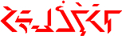 |
| Hëtiun-n ivogwařļokkai ţei. |
| PRL-ITV-FAC DYN-[присоед. основа: ‘оздоровительный отдых’]-‘ходить’-NRM/DEL/M/CSL/CPN-TPP1/7-IFL-ISR 1+ma-ACT |
| Мы будем прогуливаться позже (т.е. это наше намерение и мы имеем возможность прогуливаться). |
| Uzlas gvarl âpcââl. |
| STA-‘наизнанку’-FAC-NRM/PRX/M/CSL/UNI-IFL STA-‘предмет одежды’-OBL-NRM/DEL/M/ASO/AGG-IFL STA-‘жена’-POS-NRM/DEL/M/CSL/UNI-FML |
| Одежда его жены наизнанку. |
6.2.2. [SUB] Неуверенное Наклонение
Неуверенное Наклонение показывает, что действительность явного или подразумеваемого предположения, лежащего в основе утверждения, является определенной, но сама действительность утверждения говорящего сомнительна или неопределенна, конкретный подразумеваемый нюанс действительности подчинен конкретным Отношению и Обоснованию, связанным с глаголом. Приблизительно соответствует «мочь», «может быть», или «мог», с добавлением различения того, что явное или подразумеваемое (т.е. лежащее в основе) предположение является верным.
Примеры:
| Eglawas âmmiļ qê. |
| STA-‘болезнь’- SUB -NRM/PRX/M/CSL/UNI-IFL STA-‘ребенок-часть потомства’-AFF-NRM/DEL/M/CSL/AGG-IFL ma-GEN |
| Возможно, его дети больны (т.е. известно, что у него есть дети, но не известно, больны ли они). |
| Hëtium-m ivogwařļokkai ţei. |
| PRL-ITV-SUB
DYN-[присоед. основа: ‘оздоровительный отдых’]-‘ходить’-NRM/DEL/M/CSL/CPN-TPP1/7-IFL-ISR 1+ma-ACT |
| Мы можем прогуляться позже (т.е. известно, что возникнет возможность прогуляться, но не определено, решим ли мы). |
 |
| Uzlawas gvarl âpcââl. |
| STA-‘наизнанку’-[SUB]-NRM/PRX/M/CSL/UNI-IFL STA-‘предмет одежды’-OBL-NRM/DEL/M/ASO/AGG-IFL STA-‘жена’-POS-NRM/DEL/M/CSL/UNI-FML |
| Одежда его жены может быть наизнанку. |
6.2.3. [ASM] Зависимое Наклонение
Зависимое Наклонение действует так же, как и Действительное Наклонение, за исключением того, что действительность предположения, лежащего в основе, неизвестна. Зависимое Наклонение поэтому выражает действие, состояние или событие, чья действительность зависит от того, является ли что-то другое основанным на фактах, таким образом, соответствуя определённым использованиям «может быть» и «будет» (где «будет», прежде всего, выражает возможность, а не будущее время). Как со всеми Наклонениями, конкретный перевод подчинен конкретным Отношению и Обоснованию, связанным с глаголом.
Примеры:
| Eglayës âmmiļ qê. |
| STA-‘болезнь’-[ ASM ]-NRM/PRX/M/CSL/UNI-IFL STA-‘ребенок-часть потомства’-AFF-NRM/DEL/M/CSL/AGG-IFL ma-GEN |
| "Его дети были бы больны", или "Если бы у него были дети, они бы болели" (т.е. неизвестно, есть ли у него дети, но, если бы они у него были, то они определенно были бы больны). |
| Hëtiul-l ivogwařļokkai ţei. |
| PRL-ITV-ASM DYN-[присоед. основа: ‘оздоровительный отдых’]-‘ходить’-NRM/DEL/M/CSL/CPN-TPP1/7-IFL-ISR 1+ma-ACT |
| "Мы прогуляемся позже" (т.е. если сможем), или "Мы намереваемся прогуляться" (т.е. мы не знаем, сможем ли мы прогуляться). |
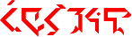 |
| Uzlayës gvarl âpcââl. |
| STA-‘наизнанку’-[ ASM ]-NRM/PRX/M/CSL/UNI-IFL STA-‘предмет одежды’-OBL-NRM/DEL/M/ASO/AGG-IFL STA-‘жена’-POS-NRM/DEL/M/CSL/UNI-FML |
| Если бы у него есть жена, ее одежда наизнанку. |
6.2.4. [SPE] Гадательное Наклонение
Гадательное Наклонение показывает, что действительность как предположения, так и самого утверждения являются неизвестными. Перевод Гадательного Наклонения зависит от конкретного контекста, иногда соответствуя «может», «может быть» или «мог», а в других случаях соответствуя вспомогательному глаголу «мог бы». Сравните примеры ниже с теми, что были указаны выше:
Примеры:
| Eglayas âmmiļ qê. |
| STA-‘болезнь’-[ SPE ]-NRM/PRX/M/CSL/UNI-IFL STA-‘ребенок-часть потомства’-AFF-NRM/DEL/M/CSL/AGG-IFL ma-GEN |
| Может быть, его дети больны (т.е. неизвестно, есть ли у него дети, но если бы имел, то они могли бы быть больны). |
| Hëtiur-r ivogwařļokkai ţei. |
| PRL-ITV-SPE DYN-[присоед. основа: ‘оздоровительный отдых’]-‘ходить’-NRM/DEL/M/CSL/CPN-TPP1/7-IFL-ISR 1+ma-ACT |
| Мы можем прогуляться позже (т.е. неизвестно, будем ли мы иметь возможность прогуляться, и даже, если мы будем иметь возможность, неопределенно, решим ли мы). |
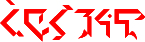 |
| Uzlayas gvarl âpcââl. |
| STA-‘наизнанку’-[ SPE ]-NRM/PRX/M/CSL/UNI-IFL STA-‘предмет одежды’-OBL-NRM/DEL/M/ASO/AGG-IFL STA-‘жена’-POS-NRM/DEL/M/CSL/UNI-FML |
| Если у него есть жена, ее одежда могла бы быть наизнанку. |
6.2.5. [COU] Неосуществимое Наклонение
Неосуществимое Наклонение показывает, что действительность предположения, лежащего в основе, является ложной или воображаемой, но что действительность утверждения в противном случае была бы верной. Неосуществимое Наклонение соответствует конструкции вспомогательного глагола «было бы» в его использовании, чтобы показать противоположность действительности (т.е. что было бы ложным, если бы предположение было бы верным). И снова, конкретный перевод подчинен конкретным Отношению и Обоснованию, связанным с глаголом.
Примеры:
| Eglayûs âmmiļ qê. |
| STA-‘болезнь’-[ COU ]-NRM/PRX/M/CSL/UNI-IFL STA-‘ребенок-часть потомства’-AFF-NRM/DEL/M/CSL/AGG-IFL ma-GEN |
| Его дети были бы больны (т.е. если бы у него были дети, они были бы больны, но он не имеет их). |
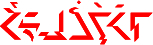 |
| Hëtiuň-ň ivogwařļokkai ţei. |
| PRL-ITV-COU DYN-[присоед. основа: ‘оздоровительный отдых’]-‘ходить’-NRM/DEL/M/CSL/CPN-TPP1/7-IFL-ISR 1+ma-ACT |
| Мы бы прогулялись позже (т.е. это наше намерение, но мы не будем иметь возможности). |
| Uzlayûs gvarl âpcââl. |
| STA-‘наизнанку’-[ COU ]-NRM/PRX/M/CSL/UNI-IFL STA-‘предмет одежды’-OBL-NRM/DEL/M/ASO/AGG-IFL STA-‘жена’-POS-NRM/DEL/M/CSL/UNI-FML |
| Если бы у него была жена, ее одежда была бы наизнанку. |
| Tʰem-mpʰâmnas osmuil. |
| ASR/CTX/ALG-PRL-PRS/COU-STA-‘благоговение’-NRM/PRX/M/CSL/UNI-IFL STA-‘долина, лощина’-DER-NRM/DEL/M/CSL/UNI-IFL |
| Эта долина и тебе бы внушила благоговение(то есть, если бы ты видел/посетил ее/побывал бы в ней) |
6.2.6. [HYP] Гипотетическое Наклонение
Гипотетическое Наклонение показывает, что действительность предположения, лежащего в основе, является ложной или воображаемой, и что действительность самого утверждения неопределенна. Гипотетическое Наклонение соответствует конструкции вспомогательного глагола «мог быть» в его использовании, чтобы показать возможную противоположность действительности (т.е. что могло бы быть, если бы ложное предположение было бы верным). И снова, конкретный перевод подчинен конкретным Отношению и Обоснованию, связанным с глаголом.
Примеры:
| Eglahës âmmiļ qê. |
| STA-‘болезнь’-[ HYP ]-NRM/PRX/M/CSL/UNI-IFL STA-‘ребенок-часть потомства’-AFF-NRM/DEL/M/CSL/AGG-IFL ma-GEN |
| Его дети могли бы быть больны (если бы у него были дети, но он их не имеет, следовательно, мы никогда не узнаем). |
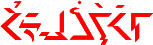 |
| Hëtiur-n ivogwařļokkai ţei. |
| PRL-ITV-HYP DYN-[присоед. основа: ‘оздоровительный отдых’]-‘ходить’-NRM/DEL/M/CSL/CPN-TPP1/7-IFL-ISR 1+ma-ACT |
| Мы могли бы прогуляться позже (т.е. так как мы не будем иметь возможность, поэтому решение, идти ли, является спорным). |
| Uzlahës gvarl âpcââl. |
| STA-‘наизнанку’-[ HYP ]-NRM/PRX/M/CSL/UNI-IFL STA-‘предмет одежды’-OBL-NRM/DEL/M/ASO/AGG-IFL STA-‘жена’-POS-NRM/DEL/M/CSL/UNI-FML |
| Если бы у него была жена, ее одежда могла бы быть наизнанку. |
6.2.7. [IPL] Подразумевающее Наклонение
Подразумевающее Наклонение показывает, что действительность предположения, лежащего в основе, определяет действительность утверждения, и что взаимоотношение между ними двумя не требуется непременно, чтобы было прямой причиной-следствием, но единственно непрямой цепью событий, от которой говорящий выводит утверждение из предположения, лежащего в основе. В грамматическом анализе, на это ссылаются как «эпистемическое условное».
Примеры:
| Eglahas âmmiļ qê. |
| STA-‘болезнь’-[ IPL ]-NRM/PRX/M/CSL/UNI-IFL STA-‘ребенок-часть потомства’-AFF-NRM/DEL/M/CSL/AGG-IFL ma-GEN |
| Его дети (должны быть) больны (т.е. как подразумевается некоторым другим фактом, таким как, то, что он остался дома вместо работы). |
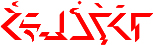 |
| Iul-n ivogwařļokkai ţei. |
| PRL-ITV-IPL DYN-[присоед. основа: ‘оздоровительный отдых’]-‘ходить’-NRM/DEL/M/CSL/CPN-TPP1/7-IFL-ISR 1+ma-ACT |
| (Если бы она одела голубое платье), мы бы позже прогулялись или (На ней было голубое платье, что означало, что) мы позже прогуляемся (т.е. платье подразумевает, что что-то произошло, в результате чего мы несомненно прогуляемся). |
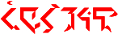 |
| Uzlahas gvarl âpcââl. |
| STA-‘наизнанку’-[ IPL ]-NRM/PRX/M/CSL/UNI-IFL STA-‘предмет одежды’-OBL-NRM/DEL/M/ASO/AGG-IFL STA-‘жена’-POS-NRM/DEL/M/CSL/UNI-FML |
| Должно быть, одежда его жены наизнанку. |
6.2.8. [ASC] Приписывательное Наклонение
Приписывательное Наклонение действует так же, как Подразумевающее Наклонение, описанное выше, за исключением того, что действительность заключения, выводимая из предположения, лежащего в основе, является неопределённой.
Примеры:
| Eglahîs âmmiļ qê. |
| STA-‘болезнь’-[ ASC ]-NRM/PRX/M/CSL/UNI-IFL STA-‘ребенок-часть потомства’-AFF-NRM/DEL/M/CSL/AGG-IFL ma-GEN |
| Его дети могут быть больны (т.е. как подразумевается некоторым другим фактом, таким, как то, что он остался дома вместо работы). |
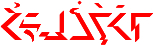 |
| Iur-ň ivogwařļokkai ţei. |
| PRL-ITV-ASC DYN-[присоед. основа: ‘оздоровительный отдых’]-‘ходить’-NRM/DEL/M/CSL/CPN-TPP1/7-IFL-ISR 1+ma-ACT |
| (Если бы он одела голубое платье, )мы могли бы прогуляться позже или (На ней было голубое платье, что означало, что )мы бы позже могли бы прогуляться (т.е. платье подразумевает, что что-то произошло, в результате чего мы вероятно прогуляемся позже). |
| Uzlahîs gvarl âpcââl. |
| STA-‘наизнанку’-[ ASC ]-NRM/PRX/M/CSL/UNI-IFL STA-‘предмет одежды’-OBL-NRM/DEL/M/ASO/AGG-IFL STA-‘жена’-POS-NRM/DEL/M/CSL/UNI-FML |
| Это значит, что одежда его жены наизнанку. |
6.3. Иллокуция
Иллокуция относится к тому, что в лингвистике обычно называется типами речевых актов, т.е. главная цель высказывания, как например, является ли она утверждением, командой, пояснительным объявлением, вопросом, предупреждением, и т.п. Иллокуция является категорией, которая обычно не отмечается в западных языках в любом согласованном грамматическом смысле, и ближайшим грамматическим эквивалентом обычно является Наклонение. В Ифкуиле Наклонение (которое обсуждалось в разделе 6.2) функционирует в более узкой грамматической области, нежели чем в западных языках. Когда наклонения западных языков действительно имеют отношение к типам речевых актов, эквивалентная функция в Ифкуиль показывается с помощью категории Иллокуции.
В Ифкуиле существует шесть Иллокуций: Утвердительная, Повелительная, Желательная, Провозгласительная, Вопросительная, Предупредительная. Они отличают типы речевых актов, совершаемых говорящим, с особым сосредоточением внимания на типе обязательства, делаемого на стороне или говорящего или слышащего, к истине или цели высказывания. Они показываются в соединении с Наклонениями(раздел 6.2 выше) при помощи инфикса Ci+Vi, как уже было показано выше в Таблице 9.
| I | II | III | IV | V | VI | VII | VIII | IX | X | XI | XII | XIII | XIV | XV |
| (((Cv) | Vl) | Cg/Cs) | Vr | (Cx/Cv | Vp/Vl | Cr | Vc | Ci+Vi | Ca | VxC | (Vf | (’Cb)) | [тон] | [ударение] |
| Продолжительность + Утверждение (+ Иллокуция) | Валентность | Обоснование ИЛИ Вид (+ Наклонение) | Вариант + Основа + Функция | Присоединенный корень ИЛИ Продолжительность + Утверждение (+ Иллокуция) | Вариант + Основа + Назначение присоединенного корня ИЛИ Валентность | Корень | Падеж | Иллокуция + Наклонение | Сущность + Протяженность + Перспектива + Конфигурация + Принадлежность | Словообраз. суффикс | Контекст + Формат | Отношение | Исполнение | Назначение + Связь |
Также Иллокуция может быть альтернативно показана при помощи аффикса Cv в Слотах I и V, что будет описано в разделе 6.5 о Продолжительности. Дополнительно, в разделе 7.3.3 мы увидим, что Иллокуция может быть показана при помощи аффикса в глагольном определителе.
Шесть Иллокуций рассматриваются ниже.
6.3.1. [ASR] Утвердительная Иллокуция
Утвердительная Иллокуция используется, чтобы выражать утверждения, которые имеют целью описать или назвать некоторое действие, событие или состояние в реальном мире, с целью предоставить слушающему определять правдивость утверждения. Поэтому, высказывание в Утвердительной Иллокуции является высказыванием, которому можно верить или не верить, и которое или истинно или ложно. Такие высказывания включали бы обычные утверждения, описания и объяснения.
6.3.2. [DIR] Повелительная Иллокуция
Повелительная Иллокуция используется в целях поручения слушающему предпринять ход действия, представленного утверждением, где утверждение описывает умственное желание, вожделение или намерение со стороны говорящего. Таким образом, высказывание в Повелительной Иллокуции является высказыванием, которое не является либо истиной, либо ложью, потому что это высказывание не описывает что-то, что подразумевает существование в реальном мире; более того, оно описывает действе или ситуацию, которые могут быть потенциально сделаны реальными, т.е. которые могут быть выполнены или осуществлены. Такие высказывания включают команды, приказы и запросы, и обычно обозначались бы в западных языках с помощью либо повелительного, либо желательного, либо сослагательного наклонений. Обязательство со стороны слушающего это не вера или неверие, а скорее подчиняться ли, соглашаться ли, или допускать ли.
6.3.3. [IRG] Вопросительная Иллокуция
Вопросительная Иллокуция используется для высказываний, соответствующим вопросам в других языках. Обязательством со стороны слушающего в отношении Вопросительной Иллокуции является обязательство согласия или несогласия в разглашении запрошенной информации, и истинным значением высказывания является нейтральное ожидание ответа.
6.3.4. [ADM] Предупредительная Иллокуция
Предупредительная Иллокуция используется для предостережений и предупреждений, соответствующих таким фразами, как «(Я) предупреждаю вас, чтобы не …», «(Я) предостерегаю вас против …», или «Будьте осторожны, не …». Высказывание не является ни истинной ни ложью, потому что оно описывает только потенциальное действие или ситуацию, которая может случиться, если её не избегнуть. Обязательство со стороны слушающего заключается в том, чтобы оценить степень вероятности потенциальной возможности, следуемой за выбором следить ли внимательно за или игнорировать/пренебрегать высказыванием.
6.3.5. [HOR] Желательная Иллокуция
Желательная Иллокуция описывает события, которые не являются истинными или реальными, но есть желание того, чтобы они были таковыми, что соотносится с фразами "если бы только" или "было бы так".
6.3.6. [DEC] Провозгласительная Иллокуция
Провозгласительная Иллокуция используется для высказываний, чей целью является самим осуществить изменение в реальном мире, опирающемуся на соглашение, культурные правила, закон, субъективный авторитет, или личный авторитет, или власть ситуации. Обязательство, налагаемое на слушающего, является обязательством признания или не признания. Такие высказывания включают заявления, объявления, провозглашения и различные «перформативные» выражения. Некоторые языки отмечают эту функцию глагола использованием наклонения, известного как увещевающее наклонение. Примерами были бы: «Я посвящаю тебя в рыцари, «Мастер Клоун»!; Король будет слушать все жалобы в полдень каждый день; Этот судья сейчас на заседании; Тем самым мы объявляем этот договор потерявшим законную силу!».
6.3.7. Примеры использования Иллокуции
| Aidhawél. |
| DYN-‘вода в качестве пищи ’-DIR-NRM/DEL/M/CSL/UNI-FML |
| Выпей воды! |
|
|
|
| Ükšoàwîl âmmell. | |
| MNF-‘клоун’-TFM-DEC-NRM/DEL/M/CSL/UNI-FML STA-‘ребенок’-ABS-DEL/M/CSL/DPX-IFL |
|
| Пара детишек неподалеку превратилась в клоунов! |
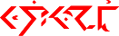 |
| Iolmawóţ êļneilüükt. |
| DYN-‘петь песню’- ADM -NRM/DEL/N/CSL/UNI-FML STA-‘птица’-ACT-NRM/DEL/M/CSL/UNI-DEF1/8-FML |
| Примите к сведению, что эта домашняя птица поет. |
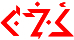 |
| Aigrawutļáun? |
| DYN-‘приготовленная еда’- IRG -NRM/DEL/M/CSL/DCT-AGC2/2-FML |
| Приготовит ли повар еды? |
| Igrawileiţrar oi eglulôn. |
| DYN-‘есть еду’-FAC- HOR -NRM/DEL/M/CSL/UNI-EXT2/6-NA11/5-IFL PCL STA-‘болезнь’-IND-NRM/DEL/M/CSL/UNI-AGC2/7-IFL |
| Если бы только врач не съел свою еду в один глоток, как сейчас. |
6.4. Падежные фреймы и Связь
Фактически все языки разрешают предложениям быть иерархически вложенными внутри других предложений, этот процесс назван Отношение Подчинения. В западных языках, вложенное предложение становится либо зависимым предложением, либо определительным придаточным предложением, явно вводимым с помощью таких союзов как «что, который, кто, где, хотя, если, пока, тогда как» или с помощью таких предлогов, за которыми следует союз, как «через который, с помощью кого» и т.п. В западных языках, такие предложения могут также встречаться как неопределенная или герундивная глагольные конструкции. Как определительное придаточное, так и зависимое предложения иллюстрируются в следующих предложениях:
Собака, что съела мою шляпу, принадлежит им.
Я хочу, чтобы он прекратил кричать.
Комитет проголосовал за то, чтобы уволить управляющего.
Мы требуем, чтобы ты дал нам равную оплату.
Хотя он закончил колледж, он ведет себя как ребенок.
Вот отверстие, через которое проходит письмо.
В случае, если ты не знаешь, я уезжаю в следующем месяце.
Мальчик, идущий нам навстречу, мой племянник.
Эквиваленты Ифкуиля для определительных придаточных и зависимых предложений известны как Падежный Фрейм или просто Фрейм. Схематически, предложение, которое будет вложено, просто рассматривается как существительное-участник к главному глаголу предложения, и, следовательно, отмечается Падежом как любое другое существительное. Например, возьмем следующие два предложения:
Она и я работали вместе.
Две нации были в состоянии войны.
Предположим, что мы хотим использовать второе предложение, чтобы предоставить временной контекст для первого предложения. Мы могли бы сделать это, с помощью подчинения второго предложения к первому, используя союз «в то время как», как в «Она и я работали вместе, в то время как две нации были в состоянии войны». Дополнительно, мы могли создать взаимосвязанное предложение с помощью вставки связующей предложной фразы, как в «Она и я работали вместе в течение того времени, когда две нации были в состоянии войны».
В Ифкуиле временной контекст для предложения может быть предоставлен с помощью существительного в любом Падеже Времени, например таком, как Согласующий Падеж (смотрите раздел 5.6.3). Такое слово как «лето» или «голод» могут быть помещены в Согласующий Падеж для создания предложений, соответствующих следующему:
Она и я работали вместе в течение лета.
Она и я работали вместе во время голода.
Также как эти одиночные слова «лето» и «голод» помещаются в Согласующий Падеж, так и все такое предложение как «Две нации были в состоянии войны» может быть помещено в Согласующий Падеж для того, чтобы предоставить временной контекст для главного предложения. Другими словами, Ифкуиль рассматривает целое зависимое предложение как фразу-существительное для склонения его в различных требуемых Падежах. Именно в этом цель Фрейма – помещать предложения в различные падежи. Делая это, Ифкуиль выполняет ту же задачу, для которой западные языки используют относительные и подчинительные союзы. В теории, любое предложение может быть помещено в любой из 96 Падежей и вложено в другое предложение, куда простое существительное могло бы быть помещено в предложении, использующем тот же самый Падеж.
6.4.1. Связь и Размещение Фреймов
Чтобы составить Падежный Фрейм, предложение второго порядка (т.е. предложение, которое будет подчинено) помещается в главное предложения в том месте, где появлялось бы существительное, склоняемое в требуемом Падеже. Действительный падеж предложения показывается в глагольном формативе тем же способом, что и для именных формативов, т.е. при помощи аффикса Vc в Слоте VII. Также слоговое ударение форматива изменится в случае наличия Фреймовой Связи, что будет объяснено в следующем абзаце.
Связь – бинарная категория Ифкуиля, имеющая два значения. Основной глагольный форматив в предложении обладает Нефреймовой Связью, что отмечается ударением на предпоследний слог или на последний, если форматив обладает Формальным Назначением (смотрите раздел 4.7). Если же форматив в пределах падежного фрейма является подчиненным, он обладает Фреймовой Связью, что показывается ударением на третий с конца слог (или на четвертый с конца, если форматив обладает Формальным Назначением).
Таблица 10: Связь × Назначение
| Ударение: 2 Связи × 2 Назначения | Нефреймовая Связь | Фреймовая Связь | ||
| Неформ. Назначение | Формальное Назначение | Неформ. Назначение | Формальное Назначение | |
| предпоследний слог | последний слог | третий с конца слог | четвертый с конца слог | |
Если в формативе недостаточно слогов для обеспечения ударения на третий или на четвертый с конца слог, любой морфо-фонологический Слот (смотрите раздел 3.1.1), незаполненный из-за обычно неотмечаемого стандартного значения, может быть заполнен при помощи альтернативного стандартного значения, например, аффикс -a- в Слоте IV (смотрите раздел 3.2.2) и/или инфикс -wë- в Слоте IX (смотрите раздел 6.5), и/или аффикс -a- в Слоте XII (смотрите раздел 4.6) для того, чтобы создать достаточное количество слогов.
Если падежный фрейм вставлен в начало или в середину главного предложения, последнее слово падежного фрейма обычно обладает специальным суффиксом -t’ (смотрите раздел 8.4.11), обозначающим конец фрейма, если это поможет избежать путаницы относительно того, какие слова в предложении принадлежат фрейму (т.е. второму предложению) и какие слова принадлежат главному предложению. Обычно в падежного фрейме глагол появляется в качестве первого члена падежного фрейма.
Вообще, Перспектива глагола во вспомогательном предложении действует независимо от Перспективы основного глагола, однако, также общепринято глагол во вспомогательном предложении помещать в Абстрактную Перспективу, что дает эффект переноса всей информации глагола о Перспективе на основной глагол, подобно тому способу, которым в английском языке подчиненные предложения используют герундии и инфинитивы, чтобы перенести всю информацию о времени на главный глагол предложения.
6.4.2. Истолковывая по-новому понятие Зависимого Предложения
В Ифкуиль не существует прямого эквивалента зависимых предложений языков западного мира. Ифкуиль обходится с такими предложениями так же, как с придаточными предложения, использущими вышеописанный Падежный Фрейм. Однако, способ, которым это совершается, будучи в конечном счёте логичным, является до некоторой степени запутанным и смущающим с западной точки зрения. Поэтому, чтобы проанализировать, как Ифкуиль по-новому интерпретирует западные зависимые предложения в подчиненные Падежные Фреймы, в начале потребуется от нас пересмотреть природу зависимых предложений в языках западного мира, таких, как английский.
Зависимое предложение ссылается на вложенное предложение, которое видоизменяет или характеризует «главное» существительное в основном предложении. Существует два типа зависимых предложений – ограниченное (или подчиненное) или неограниченное (или независимое). Эти два типа иллюстрируются в следующих предложениях.
Ограниченное предложение
1) Те львы, что любят гоняться за своим хвостом, могут быть увидены в любом цирке.
2) Та книга, что я только что закончил читать, была написан священником.
Неограниченное предложение
1) Львы, которые любят гоняться за своим хвостом, могут быть увидены в любом цирке.
2) Эта книга, которую я только что закончил читать, была написан священником.
В первом предложении, часть предложения «что любят гоняться за своим хвостом» ссылается на особенный тип льва, обнаруживаемого в цирке (т.е. не все львы гоняются за своим хвостом). Так же, часть предложения «что я только что закончил читать» во втором предложении ограничена в том, что оно рассматривается говорящим, как необходимое, чтобы идентифицировать, о какой книге говорится, т.е. без этой части предложения, слушающий не узнал бы, на какую книгу ссылается говорящий.
Тем не менее, заметьте различие в значении, при сравнении первых двух предложений с третьим и четвертым предложениями. В третьем предложении говорящий подразумевает, что все львы гоняются за своим хвостом, не обращая внимания, находятся ли они в цирке. В четвертом предложении, индивидуальность книги уже известна слушающему, и говорящий просто предоставляет два дополнительных факта о ней; факт, что он только что закончил её читать и факт о её авторе. Заметьте, что в западных языках, неограниченное предложение отмечается при написании с помощью запятых и не может начинаться с «что» (скорее должно использовать «который» или «кто»); также такие предложения обычно говорятся с пониженной интонацией в соединении (короткой паузой) сразу до и после подчиненного предложения.
6.4.2.1. Ограниченные подчиненные предложения
Ифкуиль обращается с вышеуказанными понятиями об ограниченных предложениях другим способом. Мы в начале проанализируем, как Ифкуиль создает эквиваленты к ограниченным зависимым предложениям. Это лучше всего может быть достигнуто с помощью анализа нижележащих предложений, которые дают начало главному и взаимосвязанному предложениям. Анализируя предложение №2 выше, оно может быть разбито на два отдельных предложения:
Эта книга была написана священником. (Священник написал эту книгу.)
Я только что закончил читать эту книгу.
В Ифкуиле предложение, которое будет работать в качестве главного предложения, действует как «шаблон», в который будет помещено подчиненное предложение. Индивидуальное место в шаблоне, которое займет предложение, зависит от того, какую семантическую роль, т.е. Падеж (смотрите раздел 5) займет подчиненное предложение. Заметьте, что общей точкой, на которую ссылаются эти два предложения, является «эта книга». В главном предложении «эта книга» действует в семантической роли Содержимого (смотрите раздел 5.1.2), внешне равноценного непосредственному объекту Абсолютивного субъекта «священник», поэтому главное предложение становится шаблоном «Священник написал Х», где Х стоит в Косвенном Падеже (смотрите раздел 5.3.1). Между тем, во второстепенном приложении существительное, которое является общей точкой ссылки (что в западной грамматике называлось бы «голова» зависимого предложения), отмечается с помощью аффикса, показывающего такое. Таким образом, теперь мы имеем эти два предложения как:
Священник написал [ ]. Я только что закончил читать эту книгу-H.
«-H» во втором предложении выше предназначен показывать аффикс, отмечающий «голову» или общую точку ссылки между двумя предложениями. В этой точке Ифкуиль вставляет второе предложение, как Падежный Фрейм в пустой слот, основываясь на семантической роли, которую оно будет играть, в этом примере, роль Содержимого отмечается с помощью Косвенного Падежа (смотрите раздел 5.3.1).
Священник написал [OBL]. Я только что закончил читать эту книгу-H.
Как описано в Разделе 6.4.1, глагол второстепенного предложения перемещается в начало Падежного Фрейма и принимает соответствующий падежный маркер (Косвенный).
Священник написал я только что закончил читать-OBL эту книгу-H.
При обратном переводе этого предложения ближайшим буквальным переводом была бы довольно неуклюжая конструкция: «Священник написал то, что я только что закончил читать, эту книгу». Однако, это и есть то, как Ифкуиль переводит предложение «Священник написал ту книгу, что я только что закончил читать».
Два наблюдения могут сделаны из этого предложения. Во-первых, в отличие от западных языков, главная часть предложения не содержит «головы». Взамен, «голова» отмечается изнутри вставленного предложения. Во-вторых, не существует различия между этим процессом и передачей других типов придаточных предложений, использующих Падежный Фрейм, так как переделывается (или по-новому истолковывается) главное предложение, чтобы обеспечить слот (место) для семантической роли вставляемого предложения, тем же образом, каким создаются придаточные предложения в Ифкуиле. Поэтому, как было ранее установлено, Ифкуиль не делает различий между придаточными и зависимыми предложениями.
Аналогично, другой пример предложения выше, «Те львы, что любят гоняться за своим хвостом, могут быть увидены в любом цирке» стал бы в Ифкуиле следующим: «В любом цирке, можно увидеть определенных львов-H любить гоняться-OBL свой хвост». Буквальный перевод обратно был бы: «В любом цирке можно увидеть, что определенные львы любят гоняться за своим хвостом».
6.4.2.2. Неограниченные подчиненные предложения
Что касается независимых или неограниченных предложениях, как показано на примере предложений 3) и 4) ранее, Ифкуиль обращается с ними по-прежнему по-другому. В западных языках неограниченное предложение не помогает идентифицировать существительное или обеспечить контекст для этого, а просто добавляет дополнительную информацию о уже идентифицированном существительном. Поэтому неограниченные зависимые предложения служат полностью другой когнитивно-семантической цели, нежели ограниченные предложения, факт, скрытый их почти той же самой внешней структурой. Ифкуиль признает такое глубокое различие на явном уровне предложения, просто совсем не используя подчинение предложений. Скорее, двум предложениям придается такой же равный статус, как статус главного предложения, и просто соединяются с помощью согласовывающего аффикса. Поэтому ранее указанные предложения 3) и 4) становятся:
Можно увидеть львов в любом цирке, и они любят гоняться за своими хвостами.
Священник написал эту книгу, и я только что закончил её читать.
6.4.2.3. Использование Соотносительного Падежа вместо простых зависимых предложений
Соотносительный Падеж (был рассмотрен в разделе 5.5.25) используется для создания падежных фреймов, эквивалентных фразам "этот/который/тот, кто...". Такой фрейм может быть использован в соединении с конкретными Функциями (смотрите раздел 6.1) для передачи информации о том, являются ли отношение придаточного предложения к основному описывающим, идентифицирующей связкой и т.д.
6.4.3. Примеры использования Падежного Фрейма
|
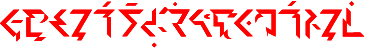 |
|
| Âffapka gvilevum ‾xhéi’aica ekšaéţ odralekʰá gvoecuaţ. |
|
| STA-‘плакать’-NRM/ICP/U/CSL/UNI-IFL STA-‘предмет одежды’-AFF-NRM/DEL/M/CSL/UNI-CAP1/3-ROL1/9-IFL FRAMED/DYN-‘знать’-PCR-NRM/DEL/A/CSL/UNI-CPT-IFL STA-‘клоун’-OGN-NRM/DEL/N/CSL/UNI-FML STA-‘правило’-OBL-NRM/DEL/M/CSL/UNI-TPP1/3-FML STA-‘предмет одежды’-REF-NRM/DEL/A/CSL/UNI-DEV2/1-IFL |
|
| Неумелый портной заплакал после того, как узнал о клоунской «новой директиве об обнаженности» | |
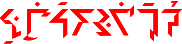 |
| N-nsaixtáš qu íkau’šurdûž. |
| CNT-DYN-‘работа/занятость’-NRM/PRX/M/ASO/UNI-FML ma-IND FRAMED-FML-DYN-‘путешествовать’-CON-NRM/PRX/M/ASO/UNI-EXD1/9-CNS1/6 |
| Он продолжает работать, несмотря на своё нежелание быть вынужденным ещё и ещё путешествовать |
6.5. Продолжительность
Продолжительность имеет отношение к вариантам временной картины того, как происходит действие, состояние или событие, например, в моментальной, длительной или повторяющейся манере (или отсутствию этого). Продолжительность особенно полезна в описании явлений, происходящих внезапными импульсами короткой продолжительности, например, сверкать, брызгать, мерцать, чередоваться и т.п. Продолжительность выполняет функцию, близкую к морфологической категории Протяжённости, ранее описанную в разделе 4.4 для определения продолжительной природы, начало и конец, и действительную картину состояния, действия или события.
Девять Продолжительностей - это Ситуативная, Мгновенная, Дробная, Повторная, Отрывистая, Перемежительная, Многократная, Импульсная, Беспорядочная. Они отмечаются с помощью аффикса Cv форматива, который зависит от Утверждения (и, возможно, Иллокуции) глагола (обсуждается в разделах 6.6 и 6.3 соответственно). Аффикс Cv обычно помещается в Слот V, за исключением случаев, когда форматив содержит в себе присоединенный корень (смотрите раздел 7.4), в таких случаях Cv помещается в Слот I. (Также в разделе 7.3.3 мы увидим, что в качестве альтернативы Cv может быть помещен в глагольный определитель).
| I | II | III | IV | V | VI | VII | VIII | IX | X | XI | XII | XIII | XIV | XV |
| (((Cv) | Vl) | Cg/Cs) | Vr | (Cx/Cv | Vp/Vl | Cr | Vc | Ci+Vi | Ca | VxC | (Vf | (’Cb)) | [тон] | [ударение] |
| Продолжительность + Утверждение (+ Иллокуция) | Валентность | Обоснование ИЛИ Вид (+ Наклонение) | Вариант + Основа + Функция | Присоединенный корень ИЛИ Продолжительность + Утверждение (+ Иллокуция) | Вариант + Основа + Назначение присоединенного корня ИЛИ Валентность | Корень | Падеж | Иллокуция + Наклонение | Сущность + Протяженность + Перспектива + Конфигурация + Принадлежность | Словообраз. суффикс | Контекст + Формат | Отношение | Исполнение | Назначение + Связь |
Наличие инфикса Cv в Слоте V требует наличия аффикса Vl в Слоте VI (смотрите раздел 6.7 ниже). Но в случае, если категории Продолжительности, Утверждения, Иллокуции и Валентности одновременно находятся в своих стандартных формах (а именно Ситуативная Продолжительность, Утвердительная Иллокуция, Одиночная Валентность и Нейтральное Утверждение), то они обычно не отмечаются, то есть аффиксы Cv и Vl удаляются, а Слоты V и VI остаются пустыми.
Учтите: если Слоты V и VI заполнены (неважно, заполнены ли они инфиксами Cv и Vl или инфиксами Cx и Vp, рассматриваемыми в разделе 7.4), становится необходимым отличать их от аффиксов корня и падежа Cr и Vc из слотов VII и VIII (чтобы читатель/слушатель мог понять, какие согласные и гласные к какому морфо-фонологическому слоту относятся). Это может быть достигнуто любым из двух способов:
1. Аффикс Vr в Слоте IV должен быть заполнен, и вслед за ним должна следовать дополнительная гортанная смычка ’. Эта гортанная смычка даёт понять читателю/слушателю, что Слоты V и VI заполнены.
2. Или, если форматив не обладает Наклонением и Иллокуцией (а если точнее, обладает их стандартными формами - Действительным Наклонением и Утвердительной Иллокуцией), тогда эта комбинация отмечается аффиксом -wë- в Слоте IX. Этот вариант возможен только в случае, если Слоты V и VI отмечены аффиксами Cx и Vp, а не Cv и Vl.
Значения аффикса Cv показаны в таблицах 11(а) - 11(е) ниже. Если Иллокуция форматива уже показана при помощи аффикса Ci+Vi в Слоте IX, тогда в аффиксе Cv она не учитывается. В таком случае используются значения аффикса Cv только для Утвердительной Иллокуции (как для стандартной), то есть, только значения из таблицы 11(а).
Таблицы 11(а) - 11(е). Аффикс Cv: 9 Утверждений × 9 Продолжительностей × 6 Иллокуций
Таблица 11(а)| Иллокуция | Продолж. | Утверждение | |||||||||
| 1 PPS |
2 EPI |
3 ALG |
4 IPU |
5 RFU |
6 REB |
7 THR |
8 EXV |
9 AXM |
|||
| ASR | CTX | t | t’ | tʰ | l | tr | tl | tř | tw | ty | |
| PCT | k | k’ | kʰ | x | kr | kl | kř | kw | ky | ||
| ITR | p | p’ | pʰ | vv | pr | pl | př | pw | py | ||
| REP | q | q’ | qʰ | ř | qr | ql | xr | qw | xl | ||
| ITM | b | v | vr | vl | br | bl | bř | bw | by | ||
| RCT | d | dh | ż | żż | dr | dl | dř | dw | dy | ||
| FRE | g | xh | j | jj | gr | gl | gř | gw | gy | ||
| FRG | m | mm | r | rr | mr | ml | mř | mw | my | ||
| FLC | n | nn | ddh | ll | nr | nl | nř | nw | ny | ||
Таблица 11(б)
| Иллокуция | Продолж. | Утверждение | |||||||||
| 1 PPS |
2 EPI |
3 ALG |
4 IPU |
5 RFU |
6 REB |
7 THR |
8 EXV |
9 AXM |
|||
| IRG | CTX | s | ss | sm | sn | sr | sl | sř | sw | sy | |
| PCT | š | šš | šm | šn | šr | šl | šř | šw | šy | ||
| ITR | ç | çç | çm | çn | çl | çr | çř | çw | ly | ||
| REP | c | cc | cm | cn | cr | cl | cř | cw | cy | ||
| ITM | č | čč | čm | čn | čr | čl | čř | čw | čy | ||
| RCT | z | zz | zm | zn | zr | zl | zř | zw | zy | ||
| FRE | ž | žž | žm | žn | žr | žl | žř | žw | žy | ||
| FRG | f | ff | fw | fy | fr | fl | fř | vw | vy | ||
| FLC | ţ | ţţ | ţw | ţy | ţr | ţl | ţř | dhw | dhy | ||
Таблица 11(в)
| Иллокуция | Продолж. | Утверждение | |||||||||
| 1 PPS |
2 EPI |
3 ALG |
4 IPU |
5 RFU |
6 REB |
7 THR |
8 EXV |
9 AXM |
|||
| DIR | CTX | sk | sk’ | skʰ | zg | skr | skl | skř | skw | sky | |
| PCT | st | st’ | stʰ | zd | str | stl | stř | stw | sty | ||
| ITR | sp | sp’ | spʰ | zb | spr | spl | spř | spw | spy | ||
| REP | sq | sq’ | sqʰ | xx | sqr | sql | xw | sqw | řř | ||
| ITM | šk | šk’ | škʰ | žg | škr | škl | škř | škw | šky | ||
| RCT | št | št’ | štʰ | žd | štr | štl | štř | štw | šty | ||
| FRE | šp | šp’ | špʰ | žb | špr | špl | špř | špw | špy | ||
| FRG | šq | šq’ | šqʰ | xxh | šqr | šql | xhw | šqw | řw | ||
| FLC | ň | ňň | rw | ry | ňr | ňl | ňř | ňw | řy | ||
Таблица 11(г)
| Иллокуция | Продолж. | Утверждение | |||||||||
| 1 PPS |
2 EPI |
3 ALG |
4 IPU |
5 RFU |
6 REB |
7 THR |
8 EXV |
9 AXM |
|||
| ADM | CTX | ks | kss | ksm | ksn | ksr | ksl | ksř | ksw | ksy | |
| PCT | kš | kšš | kšm | kšn | kšr | kšl | kšř | kšw | kšy | ||
| ITR | ps | pss | psm | psn | psr | psl | psř | psw | psy | ||
| REP | pš | pšš | pšm | pšn | pšr | pšl | pšř | pšw | pšy | ||
| ITM | gz | gzz | gzm | gzn | gzr | gzl | gzř | gzw | gzy | ||
| RCT | gž | gžž | gžm | gžn | gžr | gžl | gžř | gžw | gžy | ||
| FRE | bz | bzz | bzm | bzn | bzr | bzl | bzř | bzw | bzy | ||
| FRG | bž | bžž | bžm | bžn | bžr | bžl | bžř | bžw | bžy | ||
| FLC | sx | sxh | šx | šxh | zgr | zgl | zgř | zgw | zgy | ||
Таблица 11(д)
| Иллокуция | Продолж. | Утверждение | |||||||||
| 1 PPS |
2 EPI |
3 ALG |
4 IPU |
5 RFU |
6 REB |
7 THR |
8 EXV |
9 AXM |
|||
| HOR | CTX | çt | çt’ | çtʰ | sţ | çtr | çtl | çtř | çtw | çty | |
| PCT | çk | çk’ | çkʰ | šţ | çkr | çkl | çkř | çkw | çky | ||
| ITR | çp | çp’ | çpʰ | sf | çpr | çpl | çpř | çpw | çpy | ||
| REP | çq | çq’ | çqʰ | šf | çqr | çql | çqř | çqw | çč | ||
| ITM | kt | kt’ | ktʰ | gd | ktr | ktl | ktř | ktw | kty | ||
| RCT | pt | pt’ | ptʰ | bd | ptr | ptl | ptř | ptw | pty | ||
| FRE | qt | qt’ | qtʰ | tk | qtr | qtl | qtř | qtw | qty | ||
| FRG | sc | sc’ | scʰ | db | żr | żl | żř | żw | ży | ||
| FLC | šč | šč’ | ščʰ | dg | jr | jl | jř | jw | jy | ||
Таблица 11(е)
| Иллокуция | Продолж. | Утверждение | |||||||||
| 1 PPS |
2 EPI |
3 ALG |
4 IPU |
5 RFU |
6 REB |
7 THR |
8 EXV |
9 AXM |
|||
| DEC | CTX | ct | ct’ | ctʰ | tm | ctr | ctl | ctř | ctw | cty | |
| PCT | ck | ck’ | ckʰ | km | ckr | ckl | ckř | ckw | cky | ||
| ITR | cp | cp’ | cpʰ | pm | cpr | cpl | cpř | cpw | cpy | ||
| REP | cq | cq’ | cqʰ | qm | cqr | cql | gm | cqw | xm | ||
| ITM | čt | čt’ | čtʰ | tn | čtr | čtl | čtř | čtw | čty | ||
| RCT | čk | čk’ | čkʰ | kn | čkr | čkl | čkř | čkw | čky | ||
| FRE | čp | čp’ | čpʰ | pn | čpr | čpl | čpř | čpw | čpy | ||
| FRG | čq | čq’ | čqʰ | qn | čqr | čql | gn | čqw | xn | ||
| FLC | xt | xt’ | xtʰ | pk | xtr | xtl | xtř | xtw | xty | ||
Девять Продолжительностей описываются в разделах ниже. Категория Утверждения рассматривается в разделе 6.6.
6.5.1. [CTX] Ситуативная Продолжительность
Ситуативная Продолжительность – это Продолжительность по умолчанию, описывающая одиночное действие, состояние или событие, как относительно короткое (но не мгновенное), как единое холистическое наступление события, рассматриваемое один раз, где действительное наступление события не имеет отношения в отдельном контексте. Ситуативная Продолжительность может быть визуально представлена на поступательной временной шкале как короткая черта, например, —.
6.5.2. [PUN] Мгновенная Продолжительность
Мгновенная Продолжительность описывает действие, состояние или событие, которые подобны точке, является моментальным или мгновенным по природе, такие как взрыв, вспышка света, дуновение, один хлопок ладонями, столкновение между двумя объектами, укол боли, единичный кашель, щелканье замка, и т.п. Мгновенная Продолжительность может быть визуально представлена на поступательной временной шкале как единственная точка, например, •.
6.5.3. [ITR] Дробная Продолжительность
Дробная Продолжительность ссылается на моментальное или мгновенное событие, подобное Мгновенной Продолжительности выше, которое повторяет себя в быстрой, «включено-выключено», стаккато манере, подобно пулеметной очереди, стробирующей вспышке света, звонке аварийной сигнализации или быстрому бессознательному постукиванию пальцами, все вместе входящие в состав единственного события Ситуативной Продолжительности.
Визуальное представление:
• • • •
6.5.4. [REP] Повторная Продолжительность
Повторная Продолжительность ссылается на относительно короткое событие неопределенной или неясной продолжительности (т.е. как с Ситуативной Продолжительностью выше), но повторенное в «включено-выключено», стаккато манере, подобно тому, как сирена автомобиля сигналит несколько раз в быстром устойчивом ритме, или автоматическому машинному прессу.
Визуальное представление:
— — — —
6.5.5. [ITM] Отрывистая Продолжительность
Отрывистая Продолжительность похожа на Повторную Продолжительность выше, обозначая повторяющееся наступление события Мгновенной Продолжительности, однако, в отличие от Дробной Продолжительности, длительность промежутка времени между повторениями является относительно долгой и уместной в данном контексте. Отрывистая Продолжительность использовалось бы при описании ударной части музыкального узора поп-песни, постоянное щелканье пальцами в музыке, равномерное, капля за каплей, капание из водопроводного крана, и т.п.
Визуальное представление:
• • • •
6.5.6. [RCT] Перемежительная Продолжительность
Перемежительная Продолжительность относится к Повторной, как Отрывистая относится к Дробной. Перемежительная Продолжительность показывает медленное повторение события Ситуативной Продолжительности, где длительность между наступлениями события является относительно долгой и уместной в данном контексте. Примером служит звучание противотуманного гудка или постоянное уханье совы.
Визуальное представление:
— — — —
6.5.7. [FRE] Многократная Продолжительность
Многократная Продолжительность показывает наступление события Дробной Продолжительности (единственный набор повторений Мгновенной Продолжительности), которое в свою очередь повторяется через некоторые паузы, все вместе рассматриваемое как событие Ситуативной Продолжительности. Примерами были бы повторяющиеся наборы стука дятла или повторяющиеся короткие удары отбойного молотка.
Визуальное представление:
••• ••• ••• •••
6.5.8. [FRG] Импульсная Продолжительность
Импульсная Продолжительность показывает случайный рисунок появлений события Дробной Продолжительности, все вместе рассматриваемое как единственное событие Ситуативной Продолжительности.
Визуальное представление:
•• ••• •• ••••• • ••
6.5.9. [FLC] Беспорядочная Продолжительность
Беспорядочная Продолжительность показывает случайный рисунок появлений события как Дробной Продолжительности, так и более долгой Продолжительности. Примером было бы «шипение» зажженного фитиля, случайный рисунок языков пламени, чирикание птиц на природе, и т.п.
Визуальное представление:
—••— •—•• — ••—••• ••——•—••
6.5.10. Примеры использования Продолжительности
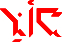 |
|
| Hwe’maklás. (Или Hweklàsürn.) | |
| INF-STA-ASR/FRG/PPS-‘дождь’-NRM/PRX/M/CSL/UNI-FML | |
| Возможно, идёт дождь |
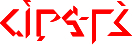 |
| Ia’qantas altaelgôn. |
| DYN-ASR/REP/PPS-MNO-‘звук’-NRM/PRX/M/CSL/UNI-IFL STA-‘записывать’-OGN-NRM/PRX/U/ASO/DCT-AGC2/7-IFL |
| Звук, идущий от группы принтеров, продолжал равномерно повторяться |
| Ilarburn êļnuļ. |
| DYN-‘голос’-NRM/PRX/U/VAR/AGG-FLC-IFL STA-‘птица’-IND-NRM/DEL/M/CSL/AGG-IFL |
| Птицы кричат, щебечут и чирикают |
6.6. Утверждение
Морфологическая категория Утверждения показывает непосредственно относящуюся к рассуждению цель высказывания, относительно какого вида правдивости слушающий должен приписывать высказыванию. В обычных терминах, Утверждение соответствует тому, является ли высказывание нейтральным утверждением или суждением, голословным утверждением, опровержимым предположением, встречным аргументом, опровержением суждения, контраргументом и т.п.
Существует девять Утверждений: Нейтральное, Признанное, Мнительное, Доводное, Опровержительное, Возразительное, Теоретическое, Пространное, Очевидное. Утверждение показывается с помощью аффикса Cv форматива, который также зависит от его Продолжительности, и, возможно, от Иллокуции (что объяснялось в разделах 6.5 и 6.3 соответственно). Аффикс Cv обычно помещается в Слот V, за исключением случаев, когда форматив содержит в себе присоединенный корень (смотрите раздел 7.4), в таких случаях Cv помещается в Слот I. (Также в разделе 7.3.3 мы увидим, что в качестве альтернативы Cv может быть помещен в глагольный определитель).
| I | II | III | IV | V | VI | VII | VIII | IX | X | XI | XII | XIII | XIV | XV |
| (((Cv) | Vl) | Cg/Cs) | Vr | (Cx/Cv | Vp/Vl | Cr | Vc | Ci+Vi | Ca | VxC | (Vf | (’Cb)) | [тон] | [ударение] |
| Продолжительность + Утверждение (+ Иллокуция) | Валентность | Обоснование ИЛИ Вид (+ Наклонение) | Вариант + Основа + Функция | Присоединенный корень ИЛИ Продолжительность + Утверждение (+ Иллокуция) | Вариант + Основа + Назначение присоединенного корня ИЛИ Валентность | Корень | Падеж | Иллокуция + Наклонение | Сущность + Протяженность + Перспектива + Конфигурация + Принадлежность | Словообраз. суффикс | Контекст + Формат | Отношение | Исполнение | Назначение + Связь |
Как уже подчёркивалось в разделе о Продолжительности выше, присутствие аффикса Cv влечет за собой несколько других морфо-фонологических структурных требований, вероятно, влияющих на Слоты IV, VI и IX. Смотрите раздел 6.5 выше, чтобы рассмотреть эти требования детально.
Каждое из девяти Утверждений рассматривается ниже.
6.6.1. [PPS] Нейтральное Утверждение
Нейтральное Утверждение является Утверждением по умолчанию, показывая, что высказывание представляет собой нейтральное утверждение или суждение онтологически объективного факта, т.е. констатация факта является независимой от мнения, веры, интерпретации третьих лиц. Примером таких утверждений были бы «Это гора» или «Я голоден».
6.6.2. [EPI] Признанное Утверждение
Признанное Утверждение обозначает высказывание, как являющееся утверждением разделяемого знания или фактом, имеющему условный характер, чья онтология является человеческим соглашением (т.е. знанием, с которым согласились), в противоположность объективному факту, независимому от человеческого знания. Примером было бы «Эта гора – Гора Фуджи», или «ООН пытается уменьшить голод в Третьем Мире».
6.6.3. [ALG] Мнительное Утверждение
Мнительное Утверждение обозначает высказывание, как онтологически субъективное суждение или голословное заявление, т.е. утверждение, выражающее чье-то мнение, веру или интерпретацию, открытую для сомнения или опровержения. Примером было бы «Эта гора красива» или «Никто в Соединенных Штатах не голодает».
6.6.4. [IPU] Доводное Утверждение
Доводное Утверждение обозначает высказывание, как опровержимое предположение, т.е. суждение, онтологически объективное или на основе соглашения, которое должно предполагать истинным до тех пор и пока не опровергнуто достаточным встречным аргументом или другими данными. Примерами были бы «Он знает, как водить машину» (например, потому что он владеет машиной) или «Она не может быть голодной сейчас» (например, из-за того, что я видел, что она вышла из ресторана).
6.6.5. [RFU] Опровержительное Утверждение
Опровержительное Утверждение обозначает высказывание, как встречное голословное утверждение, опровержение или возражение к предыдущему утверждению, голословному утверждению или предположению, где встречное голословное утверждение, опровержение или возражение являются Признанным Утверждением по своей природе, т.е. основывающимися на разделенном человеческом знании, в противоположность онтологически объективному факту.
6.6.6. [REB] Возразительное Утверждение
Возразительное Утверждение обозначает высказывание, как встречное голословное утверждение, опровержение или возражение к предыдущему утверждению, голословному утверждению или предположению, где встречное голословное утверждение, опровержение или возражение основываются на онтологически объективном факте, независимому от субъективного мнения, веры или интерпретации.
6.6.7. [THR] Теоретическое Утверждение
Теоретическое Утверждение обозначает высказывание, как гипотеза, которая может быть доказана, или теория, которая может быть потенциально проверена.
6.6.8. [EXV] Пространное Утверждение
Пространное Утверждение обозначает высказывание, как гипотезу или теорию, которые не обязательно могут быть доказаны или проверены.
6.6.9. [AXM] Очевидное Утверждение
Очевидное Утверждение обозначает высказывание, как убедительное предположение, т.е. утверждение онтологически объективное, эмпирический факт, не доступный рациональному спору или опровержению. Примером было бы «Гравитация вездесуща» или «Голод вызывается не потреблением достаточного количества пищи».
6.6.10. Примеры использования Утверждения
| Tʰem-mpʰâmnas osmuil. |
| ASR/CTX/ALG-PRL-PRS/COU-STA-‘благоговение’-NRM/PRX/M/CSL/UNI-IFL STA-‘долина, лощина’-DER-NRM/DEL/M/CSL/UNI-IFL |
| Эта долина и тебе бы внушила благоговение(то есть, если бы ты видел/посетил ее/побывал бы в ней) |
| Tlan-nsacĥas ômmil. |
| ASR/CTX/REB-MNO-CNT-STA-‘печаль’-NRM/PRX/M/CSL/UNI-IFL STA-‘ребенок женского пола’-AFF-NRM/DEL/M/CSL/UNI-IFL |
| Наоборот, девочка все ещё грустная |
| Pšei’ùlûrţ lên-nsa hwaixtasár öqeil. |
| STA-‘проишествие’-PCR-NRM/DEL/M/CSL/UNI-EXT1/6-FML IPU-CPC-CNT INF-DYN-‘работа/занятость’-NRM/PRX/M/CSL/UNI-NA11/5-FML STA-‘мужчина’-ACT-NRM/DEL/M/CSL/UNI-IFL |
| После подобного происшествия справедливо предположить, что мужчина не сможет больше работать. |
6.7. Валентность
В Ифкуиле термин Валентность используется для указания на способ участия двух отдельных сущностей или участников к любому данному глаголу, т.е. участие одной стороны автоматически подразумевает участие другой стороны в том же самом действии, событии или состоянии, в манере или параллельной, с естественным результатом, или в комплементарной манере. Такое двойственное участие естественно происходит в глаголах мировых языков и является областью, известной как «действующие совместно» глаголы. В то время как во всех языках косвенным образом есть действующие совместно глаголы, Ифкуиль явно показывает такое двойственное участие формальным и систематическим способом. Чтобы проиллюстрировать концепцию совместно действующих глаголов, сравним следующие пары предложений:
| 1а) Я нашел старика | → | 1б) Я нашел пустую банку консервов |
| 2а) Я бросил мяч в Сэма | → | 2б) Я бросил мячик в окно |
| 3а) Я выступил перед ней | → | 3б) Я выступил перед стеной |
Заметьте, что первый член каждой пары предложений имеет одушевленный объект глагола (старик, Сэм, ней), в то время как второй член каждой пары предложений имеет неодушевленный объект (пустая банка, окно, стена). Теперь сравните этот набор пар с подобным набором ниже:
| 1в) Я встретил старика | → | 1г) * Я встретил пустую банку консервов |
| 2в) Я бросил Сэму мяч | → | 2г) * Я бросил окну мяч |
| 3в) Я развлекал её | → | 3г) * Я развлекал стену |
Звездочка * означает, что второе предложение этих пар является семантически неприемлемыми для говорящих на естественных языках. Почему?
Второй набор пар предложений соответствует первому набору за исключением того, что глаголы «найти, бросить в, выступать» были заменены семантически похожими «встретить, бросить, развлекать». Тем не менее, использование неодушевленных объектов с этими последними тремя глаголами представляется неприемлемыми. Причина в том, что глаголы в первом наборе являются «одно действующими», т.е. они не требуют того, чтобы объект участвовал в действии каким-либо способом, тогда как глаголы во втором наборе являются «совместно действующими», требуя того, чтобы объекты участвовали в действии вместе с субъектом. Таким образом, пока я могу найти старика без того, чтобы старик делал что-нибудь для этого или даже знал об этом, я не могу встретить старика без того, чтобы старик тоже встретил меня. Я могу бросить мяч в Сэма без того, чтобы Сэм заметил, но если я бросаю Сэму мяч, это подразумевает, что ожидается его участие в ловле мяча. Так же я могу выступать перед кем-то, даже если они спят, но я не могу развлекать их, если они не участвуют в ситуации, наблюдая за мной.
Взаимоотношение участников, предполагающее вторую сторону совместно действующего глагола, различается в зависимости от контекста. Это может быть параллельное взаимоотношение (т.е. обе стороны участвуют одинаково), как подразумевается наречием «вместе» в «Он и я вместе бегаем трусцой», или взаимное взаимоотношение, как в предложении «Я встретил старика» (т.е. также и он встретил меня) или взаимное взаимоотношение, как в глаголах, используемых вместе с наречной фразой «друг друга», как в «Мы любим друг друга». Взаимоотношение может быть одним из дополнений, как в «Я играл вместе с ним» (например, в то время как он пел), или комплементарным взаимоотношением, как в «Я бросил Сэму мяч» (т.е. и поэтому он схватил его).
Возможны другие виды совместно действующих взаимоотношений. Именно различия в этих взаимоотношениях систематизируются в Ифкуиль в категорию, названную Валентность. В других языках совместное действие редко является точным и систематичным (использование таких наречий, как «вместе», «друг друга», или таких префиксов, как «вы-» как в «превзойти» является некоторыми исключениями), и когда выражаются лексически внутри самого глагола, является безоговорочно характерным к этому глаголу, давая начало таким парами одно-действующих/совместно действующих глаголов, как «найти/встретить», «бросить в/бросить», «выступать/развлекать», и т.п.
В Ифкуиле совместно действующие глаголы явно показываются морфологически, и типы совместно действующих взаимодействий, т.е. связи глаголов, являются методичными и полностью продуктивными для всех глаголов. В результате, лексическое различение между одно-действующими и совместно действующими глаголами не является необходимым, т.е. все глаголы могут действовать как одно-действующие так же, как и совместно действующие.
В Ифкуиль существует четырнадцать Валентностей: Одиночная, Равная, Содейственная, Взаимная, Дополняющая, Несвязанная, Дублирующая, Показательная, Принудительная, Подражательная, Последовательная, Сопутствующая, Выразительная, Посменная. Валентность показывается с помощью аффикса форматива Vl, обычно помещаемого в Слот VI морфо-фонологической структуры форматива (сразу за аффиксом Cv в Слоте V), за исключением случаев, когда форматив содержит в себе присоединенный корень (смотрите раздел 7.4) или инфикс наклонения и вида Cs в Слоте III. В таких случаях Vl помещается в Слот II, сразу за аффиксом Cv в Слоте I. В соответствии со сказанным в разделе 6.5, присутствие Cv и Vl в Слотах V и VI требуют того, чтобы за аффиксом Vr в Слоте IV следовала гортанная смычка ’.
| I | II | III | IV | V | VI | VII | VIII | IX | X | XI | XII | XIII | XIV | XV |
| (((Cv) | Vl) | Cg/Cs) | Vr | (Cx/Cv | Vp/Vl | Cr | Vc | Ci+Vi | Ca | VxC | (Vf | (’Cb)) | [тон] | [ударение] |
| Продолжительность + Утверждение (+ Иллокуция) | Валентность | Обоснование ИЛИ Вид (+ Наклонение) | Вариант + Основа + Функция | Присоединенный корень ИЛИ Продолжительность + Утверждение (+ Иллокуция) | Вариант + Основа + Назначение присоединенного корня ИЛИ Валентность | Корень | Падеж | Иллокуция + Наклонение | Сущность + Протяженность + Перспектива + Конфигурация + Принадлежность | Словообраз. суффикс | Контекст + Формат | Отношение | Исполнение | Назначение + Связь |
(В разделе 7.3.4 мы также увидим, что Валентность также может быть показана при помощи состоящего из согласных префикса глагольного определителя).
Таблица 12 ниже показывает значения аффикса Vl для каждой из 14 Валентностей.
Таблица 12: Аффиксы Валентности Vl| Сокращ. | Валентность | Аффикс Vl |
| MNO | Одиночная | a |
| PRL | Равная | e |
| CRO | Содейственная | i |
| RCP | Взаимная | o |
| CPL | Дополняющая | u |
| NNR | Несвязанная | â |
| DUP | Дублирующая | ê |
| DEM | Показательная | ô |
| RES | Принудительная | û / î |
| IMT | Подражательная | ai / au |
| CNG | Последовательная | ei / eu |
| PTI | Сопутствующая | oi / ou |
| IDC | Выразительная | ui / iu |
| MUT | Посменная | ö |
Четырнадцать соответствующих, состоящих из согласных аффиксов Валентности для глагольных определителей даны в разделе 7.3.4.
Четырнадцать Валентностей рассматриваются ниже:
6.7.1. [MNO] Одиночная Валентность
Одиночная Валентность – это Валентность по умолчанию и указывает на отсутствие совместного действия, т.е. не подразумевается участие второй стороны.
6.7.2. [PRL] Равная Валентность
Равная Валентность указывает на то, что второй участник выполняет то же действием, что и первый участник, в то же самое время. Равная Валентность использовалась бы при переводе таких предложений, как «Дети поют все вместе, Мы оба вышли пробежаться по аллее».
6.7.3. [CRO] Содейственная Валентность
Содейственная Валентность похожа на Равную Валентность, за исключением того, что второй участник занимается родственной деятельностью в то же самое время, что и первый участник, а не той же самой деятельностью. Содейственная Валентность использовалась бы при переводе таких предложений, как «Дети играли во дворе» (т.е. каждый ребенок занимался различной игровой деятельностью) или «Группа играла мою любимую песню» (подразумевая, что не все в группе играли на одних и тех же инструментах, или, возможно, что кто-то в группе пел песню, а не играл на инструменте).
6.7.4. [RCP] Взаимная Валентность
Взаимная Валентность показывает одну и ту же деятельность каждого участника, направленную друг на друга, и тем самым, переводимая наречными фразами «друг друга» или «один другого», как в «Они посмотрели друг на друга, Клоун и бакалейщик презирают один другого».
6.7.5. [CPL] Дополняющая Валентность
Дополняющая Валентность указывает на то, что второй участник совершает действие, дополнительное к действию первого участника. Под «дополнительной» понимается деятельность, отличная от деятельности первого участника, но необходимая для завершения всей общей деятельности, т.е. «другая половина» общей деятельности. Дополняющая Валентность описывается примерами в таких предложениях, как «Это мужчина и его сын играли в мяч, Гортензия отвела меня в рощу, Клоун прочел детям историю», где «играли в мяч» подразумевает дополняющие друг друга действия бросания и ловли, «отвела (в лес)» подразумевает кого-то ведущего, а кого-то следующего, и «читал» подразумевает читающего и слушателей.
6.7.6. [NNR] Несвязанная Валентность
Несвязанная Валентность указывает на то, что второй участник занимается деятельностью, совершенно несвязанной с деятельностью первого участника, т.е. побочной или случайной совместной деятельностью. Не существует прямого способа показать пример Несвязанной Валентности с помощью перевода, нежели добавить такое иносказательное предложение, как «в то время как кто-то сделал что-то другое», как в «Он брился, в то время как она делала что-то другое». Способом, которым предложение Ифкуиля использовало бы Несвязанную Валентность, было бы использование в предложениях, явно составленных, чтобы сказать, например, «Они были в доме» вместе с Несвязанной Валентностью, передавая подразумеваемое «где один участник делал одно, в то время как другой участник делал нечто другое».
6.7.7. [DUP] Дублирующая Валентность
Дублирующая Валентность указывает на то, что второй участник копирует или повторяет деятельность первого участника, как в предложениях «Давайте нарисуем картину» (т.е. Я нарисую первым, затем вы нарисуете такую же картину), «Они оба читали ту книгу» (т.е. сначала один, затем другой), «Я купил новую машину» (т.е. и сейчас кто-то другой тоже покупает новую машину).
6.7.8. [DEM] Показательная Валентность
Показательная Валентность указывает на то, первый участник демонстрирует второму участнику, как сделать что-то или что сделать. Поэтому предложение Ифкуиль, составленное как «Они играли в шахматы» с глаголом в Показательной Валентности, означало бы «Я показал ей, как играть в шахматы», в то время как предложение, составленное как «Они сражались с нами» в Показательной Валентности, означало бы «Они научили нас, как сражаться».
6.7.9. [RES] Принудительная Валентность
Принудительная Валентность указывает на то, что второй участник противится или пытается избежать участия в деятельности первого участника. Такой смысл иногда может быть предложен при переводе с использованием наречий «так или иначе», «тем не менее» или таких наречных фраз, как «всё-таки», в таких предложениях, как «Мы так или иначе отвели детей посмотреть на клоунов» (т.е. они не хотели идти), «Они все-таки скормили мне печенку» (т.е. Я не выношу печенку), «Тем не менее, он рассказал нам эту историю» (т.е. несмотря на то, что мы не хотели её слушать).
6.7.10. [IMT] Подражательная Валентность
Подражательная Валентность указывает на то, что второй участник имитирует, копирует или пытается сдублировать деятельность первого участника. Предложение Ифкуиль «Клоун жонглировал тремя мячами перед ребенком» в Подражательной Валентности подразумевало бы, что ребенок также пытался жонглировать мячами.
6.7.11. [CNG] Последовательная Валентность
Последовательная Валентность указывает на то, что второй участник вовлечен в следующую или зависимую фазу деятельности, состоящей из многих частей, специфичной деятельности, зависящей от контекста. Поэтому предложение Ифкула «Я развел бивачный костер для моего друга» в Последовательной Валентности подразумевает, что этот друг затем выполнил следующий логический шаг, т.е. он приготовил еду.
6.7.12. [PTI] Сопутствующая Валентность
Сопутствующая Валентность указывает на то, что стороны участвуют в деятельности, вовлеченной в более большую общую деятельность, и переводимую как «участвовать в». Поэтому предложение Ифкуиль «Они участвовали в гонке» в Сопутствующей Валентности означает «Каждый из них участвовал в гонке».
6.7.13. [IDC] Выразительная Валентность
Выразительная Валентность указывает на то, что второй участник воспринимает намек, нюанс, или подтекст деятельности первого участника. Поэтому предложение «Я посмотрел на неё» в Выразительной Валентности означало бы «Она поняла, что я имел в виду, посмотрев на неё», в то время как предложение «Я говорил с ними» означало бы «Они тщательно по мелочам выбрали из моих слов то, что я действительно имел в виду».
6.7.14. [MUT] Посменная Валентность
Посменная Валентность указывает на то, что обе стороны сменяют друг друга в совершении некоторой деятельности, как в «Она и я убирались, сменяя друг друга», или «Они оба чередовались, обучая начальные и продвинутые классы».
6.7.15. Примеры использования Валентности
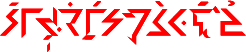 |
|
| Tö ¯um-mixhakc’éçt eglelôn ükšàleač. | |
| 1M-EFF CPL-SUB-DYN-‘учить что-либо’-NRM/GRA/M/CSL/UNI-FML-CVT1/3-CPT STA-‘болезнь’-ABS-NRM/DEL/M/CSL/UNI-AGC2/7-IFL FRAMED-FML-MNF-‘клоун’-OBL-NRM/DEL/M/CSL/UNI-QUA2/8 |
|
| Я могу тайно обучить доктора быть действительно выдающимся клоуном. |
| Il-lrazgall eqill. |
| RCP-HAB-STA-‘улыбаться’-NRM/DEL/M/CSL/DPX-IFL STA-‘человек’-AFF-NRM/DEL/M/CSL/DPX-IFL |
| Пара все время улыбается друг другу. |
| Uin-ntixal ömmul ekšíl. |
| IDC-SUB/RTR-DYN-‘видеть’-NRM/DEL/M/CSL/UNI-IFL STA-‘отец’-IND-NRM/DEL/M/CSL/UNI-IFL STA-‘клоун’-AFF-NRM/DEL/M/CSL/UNI-FML |
| Возможно, клоун понял значение внешнего вида отца. |
| Ailtac wëtöin-n qeiwi. |
| DYN-‘писать сообщение’-NRM/DEL/A/CSL/UNI-IFL RCP-PPS/CTX/ASR-DVR-FAC ma-ACT-CSL-NRM/DPX |
| Двое из них любят писать друг другу. |
| Em-mrigradh ekšóll âmmeļ. |
| PRL-PRS-DYN-‘есть/пить’-NRM/PRX/N/CSL/UNI-IFL STA-‘клоун’-ERG-NRM/DEL/M/CSL/DPX-FML STA-‘ребенок’-ABS-NRM/DEL/M/CSL/AGG-IFL |
| Теперь пара клоунов заставит детей есть вместе. |
| A’tukças tê oxnall. |
| STA-PPS/CTX/ASR-CPL-‘чесотка’-NRM/PRX/M/CSL/UNI-IFL 1m-GEN STA-‘спина’-OBL-NRM/DEL/M/CSL/DPX-IFL |
| Моя спина чешется, поэтому я царапаю ее. |
| Tʰem-mpʰâmnas osmuil. |
| ASR/CTX/ALG-PRL-PRS/COU-STA-‘благоговение’-NRM/PRX/M/CSL/UNI-IFL STA-‘долина, лощина’-DER-NRM/DEL/M/CSL/UNI-IFL |
| Эта долина и тебе бы внушила благоговение(то есть, если бы ты видел/посетил ее/побывал бы в ней) |
Внимание: Последний пример интересен тем, что в предложении нет никакой конкретной ссылки на какой-то субъект "ты". Идея того, что участвуют две стороны, говорящий и слушающий, передается только присутствием Равной Валентности. Без нее предложение означало бы "Эта долина внушила бы благоговение"; добавленная Валентность подразумевает, что говорящий заявляет другой стороне (то есть читателю/слушателю), что последний тоже бы насладился потрясающей долиной.
6.8. Исполнение
Исполнение относится к шестистороннему видовому различению, показывающему, ссылается ли глагол на действие, событие или состояние, которые ориентированы на цель или результат, и/или были ли они успешно реализованы, притом, что являются результатом чьего-либо первоначального намерения. Подобно многим морфологическим категориям Ифкуиля, Исполнение показывает семантические различения, которые обычно передаются лексическим разграничением (т.е. выбором слов) в других языках.
Исполнение показывается при помощи тона форматива (смотрите раздел 2.3.2 для детального разъяснения работы тонов в формативах Ифкуиля). Шесть Исполнений – это Бесцельное, Конечное, Безуспешное, Безрезультатное, Успешное, Результативное.
| I | II | III | IV | V | VI | VII | VIII | IX | X | XI | XII | XIII | XIV | XV |
| (((Cv) | Vl) | Cg/Cs) | Vr | (Cx/Cv | Vp/Vl | Cr | Vc | Ci+Vi | Ca | VxC | (Vf | (’Cb)) | [тон] | [ударение] |
| Продолжительность + Утверждение (+ Иллокуция) | Валентность | Обоснование ИЛИ Вид (+ Наклонение) | Вариант + Основа + Функция | Присоединенный корень ИЛИ Продолжительность + Утверждение (+ Иллокуция) | Вариант + Основа + Назначение присоединенного корня ИЛИ Валентность | Корень | Падеж | Иллокуция + Наклонение | Сущность + Протяженность + Перспектива + Конфигурация + Принадлежность | Словообраз. суффикс | Контекст + Формат | Отношение | Исполнение | Назначение + Связь |
Шесть Исполнений объясняются ниже:
6.8.1. [RPC] Бесцельное Исполнение
Бесцельное Исполнение показывается с помощью нисходящего тона. Оно является стандартным и описывает действия, состояния или события, которые заканчиваются сами в себе и не являются ориентированными на некую цель, т.е. не сосредоточены на ожидаемом исходе или конечной цели, по направлению к которой совершается поступательное усилие.
6.8.2. [CPT] Конечное Исполнение
Конечное Исполнение показывается с помощью высокого тона. Оно описывает действия, состояния или события, которые достигают или предназначены достигнуть ожидаемого исхода, т.е. которые являются ориентированными на достижение некоторой цели, исхода или конечного состояния. Такое различение обычно управляется с помощью выбора слов в западных языках. Динамизм Исполнения может быть увиден в следующих сравнениях:
| Бесцельное | → | Конечное |
| охотиться | → | поймать |
| терять | → | потерять |
| учиться | → | научиться |
| выигрывать | → | выиграть |
| стремиться к | → | достигнуть |
| рисковать | → | выиграть |
| работать | → | построить, создать, сделать |
| замещать / пропускать | → | заместить / пропустить |
| отливать | → | осушить |
| удалять по частям | → | ликвидировать |
| увеличивать | → | увеличить |
| читать | → | дочитать / закончить читать |
| уменьшать | → | уменьшить |
| окружать | → | окружить |
| увеличивать | → | сделать гигантским |
| преследовать | → | догнать |
| есть | → | съесть |
| преследовать | → | захватить |
| состязаться | → | победить |
| быть беременной | → | родить |
| бросать в | → | ударить (броском) |
| истощаться | → | истощиться, исчерпаться |
| расти | → | вырасти |
| использовать | → | истратить |
| захватывать | → | захватить |
| рвать | → | разорвать на кусочки |
| объединяться | → | объединится |
| ускоряться | → | достигнуть максимальной скорости |
| наливать | → | налить |
| истекать кровью | → | истечь кровью до смерти |
| бежать | → | пробежать |
| спускаться | → | попасть на дно |
| освещать | → | осветить |
| замедлять | → | остановить |
| искать | → | найти |
| полировать | → | наполировать |
| практиковаться | → | овладеть в совершенстве |
| затемнять | → | затемнить |
| подниматься | → | достигнуть вершины |
| исследовать | → | сделать открытие |
6.8.3. [INE] Безуспешное Исполнение
Безуспешное Исполнение показывается с помощью восходящего тона. Это Исполнение и следующее Безрезультатное, работают аналогично Бесцельному и Конечному Исполнению соответственно, но являются особенными по отношению к действиям, событиям или состояниям, выраженным на начальной стадии (явно ли или косвенным образом) как нереализованные намерения, попытки, желания, нужды, и т.п., часто в соединении с модальными аффиксами к глаголу (смотрите раздел 7.1). Для таких «неосуществленных» глаголов приводятся примеры в следующих предложениях: «Я хочу танцевать, Ей нужно работать, Я пытался закончить, Она должна найти его, Я выбрал праздновать». Каждое из этих предложений само по себе не определяет, осуществилось ли действие или нет, т.е. просто из того, что я хочу танцевать, не обязательно следует, что я действительно танцую; то, что ей нужно работать, не говорит нам, будет ли она в действительности работать, и т.п.
Безуспешное Исполнение показывает, что результат «неосуществленного» глагола в Бесцельном Исполнении является неудачным. Таким образом, предложение «Я хочу танцевать» в Безуспешном Исполнении переводилось бы как «Я хочу танцевать, но не собираюсь», тогда как предложение «Я пытался поесть» в в Безуспешном Исполнении означает «Я пытался поесть, но не смог».
6.8.4. [INC] Безрезультатное Исполнение
Безрезультатное Исполнение показывается с помощью низкого тона. Оно указывает, что результат «неосуществленного» глагола Конечного Исполнения является неудачным. Безрезультатное Исполнение работает идентично Безуспешному Исполнению, за исключением того, что Безрезультатное Исполнение ссылается на глагол, ориентированный на цель/результат, как показано в сравнительной таблице выше для Конечного Исполнения. Таким образом, предложение «Я пытался поесть» в Безрезультатном Исполнении означает «Я пытался съесть это всё полностью, но не смог»
6.8.5. [PST] Успешное Исполнение
Успешное Исполнение показывается с помощью восходяще-нисходящего тона. Дополняя Безуспешное Исполнение, это Исполнение показывает намерение, воплощенное в реальности. Поэтому предложение «Я хочу танцевать» в Успешном Исполнении переводилось бы как «Я хочу танцевать, и поэтому я собираюсь танцевать», а предложение «Я пытался поесть» в Успешном Исполнении означает «Я преуспел в поедании чего-то».
6.8.6. [EFC] Результативное Исполнение
Также, Результативное Исполнение дополняет Безрезультатное Исполнение, описывая то же самое удачное усилие, подразумеваемое Успешным Исполнением, только применяемое к глаголам, ориентированным на результат/цель. Поэтому «Я хотел закончить» в Результативном Исполнении подразумевает, что желание было успешно доведено до конца; «Я пытался поесть» в Результативном Исполнении означает «Я преуспел в поедании всего этого». Результативное Дополнение показывается при помощи нисходяще-восходящего тона.
6.8.7. Примеры использования Исполнения
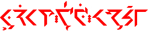 |
| ˇIxhát’ êpal Iţkuil efneil tê. |
| DYN-‘изучать’-NRM/TRM/M/CSL/UNI-FML-EFC STA-[несущая основа(?)]-OBL-NRM/DEL/M/CSL/UNI “Ithkuil” STA-‘кузен’-ACT-DEL/M/CSL/UNI-IFL 1M-GEN |
| Мой кузен в конце концов выучил Ифкуиль. |
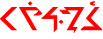 |
→ | |
| Uakal egruláun. | → | ¯Uakal egruláun. |
| [PRC]-DYN-‘приходить’-NRM/DEL/M/CSL/UNI-IFL STA-‘готовить еду’-IND-NRM/DEL/M/CSL/UNI-AGC2/2-FML |
→ | CPT -DYN-‘приходить’-NRM/DEL/M/CSL/UNI-IFL STA-‘готовить еду’-IND-NRM/DEL/M/CSL/UNI-AGC2/2-FML |
| Повар в пути. | → | Повар прибыл. |
6.9. Обоснование
Подтверждение выражает степень или тип очевидности, поддерживающего утверждение, грамматическое требование Ифкуиля. Такие категории обычно называются «конструкции обоснования» или «фактивы» в различных языках за пределами западного мира, содержащих эти конструкции. В Ифкуиле существует 14 Обоснований, пять из них относятся к высказываниям, основанным не на слухах, а девять - к высказываниям, созданным на основе чужих слов. Последние девять категорий различаются между собой благодаря двумерной матрице того, подразумевается ли говорящим, что источнику его сообщения можно доверять и является ли высказывание/информация потенциально проверяемым. Точность конструкций обоснования в Ифкуиле недостижима при переводе никаким образом, кроме громоздких конструкций, но может быть примерно достигнута с помощью таких фраз, как "по сообщениям...", "по-видимому", "предположительно", "якобы", "как утверждают", "ходит слух, что...", "у меня такое чувство, что...", и т.д.
Все 14 Обоснований показываются при помощи аффикса Cg в Слоте III.
| I | II | III | IV | V | VI | VII | VIII | IX | X | XI | XII | XIII | XIV | XV |
| (((Cv) | Vl) | Cg/Cs) | Vr | (Cx/Cv | Vp/Vl | Cr | Vc | Ci+Vi | Ca | VxC | (Vf | (’Cb)) | [тон] | [ударение] |
| Продолжительность + Утверждение (+ Иллокуция) | Валентность | Обоснование ИЛИ Вид (+ Наклонение) | Вариант + Основа + Функция | Присоединенный корень ИЛИ Продолжительность + Утверждение (+ Иллокуция) | Вариант + Основа + Назначение присоединенного корня ИЛИ Валентность | Корень | Падеж | Иллокуция + Наклонение | Сущность + Протяженность + Перспектива + Конфигурация + Принадлежность | Словообраз. суффикс | Контекст + Формат | Отношение | Исполнение | Назначение + Связь |
Значения префикса Cg, так же, как и значения (описания доказательной базы) соответствующих Обоснований, представлены в Таблице 13 ниже.
Таблица 13(а) и 13(б): Значения аффикса Обоснования Cg
| Сокр. | Обоснование | Cg | Доказательная база | |
| 1 | CNF | Подтверждающее | (h-)* | прямое наблюдение/знание, может быть проверено другими людьми |
| 2 | AFM | Утвердительное | y- | прямое наблюдение/знание, может ли быть проверено, неизвестно |
| 3 | RPT | Отчётное | w- | прямое наблюдение/знание, не может быть проверено другими людьми |
| 4 | INF | Дедуктивное | hw- | умозаключение или вывод |
| 5 | ITU | Интуитивное | hh- | интуиция, чувство, ощущение |
*Подтверждающее Обоснование не отмечается за исключением случаев, когда в формативе присутствует значение Vl в Слоте II, тогда значение аффикса — h-
Категории высказываний, основанных на слухах
| Сокр. | Обоснование | Cg | Источнику можно доверять? | Можно ли проверить? | |
| 6 | PSM | Допустимое | hm- | Да | Да |
| 7 | PSM2 | Допустимое-2 | hn- | Да | Неизвестно |
| 8 | PPT | Намеревательное | hr- | Да | Нет |
| 9 | PPT2 | Намеревательное-2 | lw- | Неизвестно | Да |
| 10 | CJT | Предположительное | ly- | Неизвестно | Неизвестно |
| 11 | DUB | Нерешительное | rw- | Неизвестно | Нет |
| 12 | TEN | Пробное | ry- | Нет | Да |
| 13 | PUT | Мнимое | řw- | Нет | Неизвестно |
| 14 | IPB | Неправдоподобное | řy- | Нет | Нет |
6.9.1. Примеры использования Обоснования
|
|
|
| Qö ¯uhmixhákc’ eglelôn ükšàwëla.
|
|
| ma-EFF CPT-CPL-PSM-DYN-‘изучать’-GRA/M/CSL/UNI-FML STA-‘болезнь’-ABS-NRM/DEL/M/CSL/UNI-AGC2/7-IFL FRAMED/FML-MNF-‘клоун’-OBL-NRM/DEL/M/CSL/UNI |
|
| Вероятно, он обучает доктора быть клоуном. |
| Ihrazgallamz eqill. |
| RCP-PPT-STA-‘улыбаться’-NRM/DEL/M/CSL/DPX-MOT2/5-IFL STA-‘человек’-AFF-NRM/DEL/M/CSL/DPX-IFL |
| Якобы пара не может перестать улыбаться друг другу. |
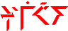 |
| Irwailtac qeiwi. |
| RCP-DUB-DYN-‘писать сообщение’-NRM/DEL/A/CSL/UNI-IFL ma-ACT-CSL-NRM/DPX |
| Вроде бы двое из них пишут друг другу, но кто знает, правда это или нет. |
6.10. Вид
Вид предоставляет подробную и точную временную информацию о глаголе, не относящуюся к текущему моменту высказывания говорящего (как в Перспективе в Разделе 4.3), но скорее относительно контекстуального «настоящего времени» действия, состояния или события, о которых говорится. В Ифкуиле существует 32 Вида. По большей части, Виды переводятся различными наречными фразами.
Как правило, Вид показывается при помощи аффикса глагольного определителя, так как подобные аффиксы позволяют передать и второй Вид, и любая морфологическая информация, переносимая с помощью определителя, требует также наличия видового маркера. Несмотря на это, возможно также показать единственный Вид внутри самого форматива посредством состоящего из согласных префикса Cs в Слоте III. Такая альтернатива может быть возможна в случае, если Слоты I и II заполнены, что требует также присутствия либо аффикса Cs, либо аффикса Cg в Слоте III.
| I | II | III | IV | V | VI | VII | VIII | IX | X | XI | XII | XIII | XIV | XV |
| (((Cv) | Vl) | Cg/Cs) | Vr | (Cx/Cv | Vp/Vl | Cr | Vc | Ci+Vi | Ca | VxC | (Vf | (’Cb)) | [тон] | [ударение] |
| Продолжительность + Утверждение (+ Иллокуция) | Валентность | Обоснование ИЛИ Вид (+ Наклонение) | Вариант + Основа + Функция | Присоединенный корень ИЛИ Продолжительность + Утверждение (+ Иллокуция) | Вариант + Основа + Назначение присоединенного корня ИЛИ Валентность | Корень | Падеж | Иллокуция + Наклонение | Сущность + Протяженность + Перспектива + Конфигурация + Принадлежность | Словообраз. суффикс | Контекст + Формат | Отношение | Исполнение | Назначение + Связь |
Аффикс Cs всегда содержит в себе один из особых двусложных соединений удвоенных согласных, пищущихся как n-n, m-m, r-r, l-l и т.д. или какое-либо другое слоговое сочетание согласных, например, l-m, l-n, r-m, r-n или ř-n. Единственное место в формативе, где такие сочетания согласных могут появиться - это аффикс Cs в Слоте III(такая же ситуация и со Слотом Г в глагольных определителях, что будет объяснено в главе 7). Таким образом, читатель/слушатель всегда сможет различить, представляет ли собой сочетание согласных аффикс Вида Cs или аффикс Обоснования Cg(смотрите раздел 6.9 выше).
Помимо Вида, Cs также показывает и Наклонение. Если Наклонение форматива уже показано с помощью инфикса Ci+Vi в Слоте IX (смотрите раздел 6.2), то Cs будет использовать только Действительное Наклонение в качестве "заполнителя" или стандартного значения, и только значение Вида в аффиксе будет семантически активно.
Значения Cs показаны в Таблице 14 ниже. (Формы альтернативных состоящих из гласных аффиксов, показывающих Вид в глагольных определителях, будут рассмотрены в разделе 7.3.1)
Таблица 14: Значения аффикса Cs (32 Вида × 8 Наклонений)| Вид | Наклонение | ||||||||
| FAC | SUB | ASM | SPC | COU | HYP | IPL | ASC | ||
| — | n-n | m-m | l-l | r-r | ň-ň | r-n | l-ň | r-ň | |
| 1 | RTR | n-nr | n-nt | n-nt’ | n-nd | n-ntʰ | n-nţ | n-ndh | n-nh |
| 2 | PRS | m-mr | m-mp | m-mp’ | m-mb | m-mpʰ | m-mf | m-mv | m-mh |
| 3 | HAB | l-lr | l-lt | l-lt’ | l-ld | l-ltʰ | l-lţ | l-ldh | l-lh |
| 4 | PRG | r-rn | r-rt | r-rt’ | r-rd | r-rtʰ | r-rţ | r-rdh | r-rh |
| 5 | IMM | ň-ňr | ň-ňk | ň-ňk’ | ň-ňg | ň-ňkʰ | ň-ňx | ň-ňq | ň-ňh |
| 6 | PCS | n-nw | n-ntw | n-nt’w | n-ndw | n-ntʰw | n-nţw | n-ndhw | n-nhw |
| 7 | REG | m-mw | m-mpw | m-mp’w | m-mbw | m-mpʰw | m-mfw | m-mvw | m-mhw |
| 8 | EXP | l-lw | l-ltw | l-lt’w | l-ldw | l-ltʰw | l-lţw | l-ldhw | l-lhw |
| 9 | RSM | r-rw | r-rtw | r-rt’w | r-rdw | r-rtʰw | r-rţw | r-rdhw | r-rhw |
| 10 | CSS | ň-ňw | ň-ňkw | ň-ňk’w | ň-ňgw | ň-ňkʰw | ň-ňxw | ň-ňqw | ň-ňhw |
| 11 | RCS | n-ny | n-nty | n-nt’y | n-ndy | n-ntʰy | n-nţy | n-ndhy | n-nç |
| 12 | PAU | m-my | m-mpy | m-mp’y | m-mby | m-mpʰy | m-mfy | m-mvy | m-mç |
| 13 | RGR | l-ly | l-lty | l-lt’y | l-ldy | l-ltʰy | l-lţy | l-ldhy | l-lç |
| 14 | PCL | r-ry | r-rty | r-rt’y | r-rdy | r-rtʰy | r-rţy | r-rdhy | r-rç |
| 15 | CNT | n-ns | n-nz | n-nsw | n-nzw | n-nc’ | n-ncʰ | n-nc’w | n-ncʰw |
| 16 | ICS | m-ms | m-mz | m-msw | m-mzw | m-mc’ | m-mcʰ | m-mc’w | m-mcʰw |
| 17 | PMP | ň-ňs | ň-ňz | ň-ňsw | ň-ňzw | ň-ňc’ | ň-ňcʰ | ň-ňc’w | ň-ňcʰw |
| 18 | CLM | l-ls | l-lz | l-lsw | l-lzw | l-lc’ | l-lcʰ | l-lc’w | l-lcʰw |
| 19 | PTC | r-rs | r-rz | r-rsw | r-rzw | r-rc’ | r-rcʰ | r-rc’w | r-rcʰw |
| 20 | TMP | n-nš | n-nž | n-nšw | n-nžw | n-nč’ | n-nčʰ | n-nč’w | n-nčʰw |
| 21 | MTV | m-mš | m-mž | m-mšw | m-mžw | m-mč’ | m-mčʰ | m-mč’w | m-mčʰw |
| 22 | CSQ | ň-ňš | ň-ňž | ň-ňšw | ň-ňžw | ň-ňč’ | ň-ňčʰ | ň-ňč’w | ň-ňčʰw |
| 23 | SQN | l-lš | l-lž | l-lšw | l-lžw | l-lč’ | l-lčʰ | l-lč’w | l-lčʰw |
| 24 | EPD | r-rš | r-rž | r-ršw | r-ržw | r-rč’ | r-rčʰ | r-rč’w | r-rčʰw |
| 25 | DCL | n-nļ | m-mļ | ň-ňļ | n-ntļ | m-mtļ | ň-ňtļ | l-ltļ | r-rtļ |
| 26 | CCL | l-lm | l-lļ | n-nl | ň-ňm | m-mř | m-mt | ň-ňt | ň-ňn |
| 27 | CUL | r-rm | r-rl | m-ml | m-mn | r-mř | m-mt’ | ň-ňt’ | ň-ňç |
| 28 | IMD | l-ln | l-nļ | l-lř | n-nm | ň-ňř | m-mtʰ | ň-ňtʰ | ň-ňţ |
| 29 | TRD | l-nw | l-ny | l-lg | l-lgw | l-lx | l-lxw | l-lv | l-lcw |
| 30 | TNS | r-nw | r-my | r-rg | r-rgw | r-rx | r-rxw | r-rv | r-rcw |
| 31 | ITC | l-mw | l-my | l-lb | l-lbw | l-lf | l-lfw | l-ňw | l-lčw |
| 32 | CSM | r-mw | r-ny | r-rb | r-rbw | r-rf | r-rfw | r-ňw | r-rčw |
Тридцать две видовых категории рассматриваются ниже.
6.10.1. [RTR] Прошедший Вид
Прошедший Вид действует в объединении с Перспективой (смотрите раздел 4.3), чтобы создавать различные эквиваленты к категориям времени языков западного мира. Вместе с Ограниченной Перспективой, Прошлый Вид может быть переведён как «уже сделал» как в «Я уже сделал это». Вместе с Неограниченной Перспективой, Прошлый Вид приравнивается к простому прошлому времени. Вместе с Обобщающей и Абстрактной Перспективами, Прошлый Вид добавляет к данному глаголу значение «и это всегда было так».
6.10.2. [PRS] Будущный Вид
Подобно Прошедшему Виду, Будущный действует вместе с Перспективой, чтобы создавать различные эквиваленты к категориям времени языков западного мира. Вместе с Ограниченной Перспективой, Будущный Вид приравнивается к будущему времени. Вместе с Неограниченной Перспективой Будущный Вид может быть переведен как будущее совершенное время в английском языке. Вместе с Обобщающей и Абстрактной Перспективами, Будущный Вид добавляет к данному глаголу значение «и это всегда будет так».
6.10.3. [HAB] Привычный Вид
При использовании вместе с Ограниченной Перспективой Привычный Вид передает понятие «всегда» или «продолжать делать», в то время как вместе с Неограниченной Перспективой конструкция «иметь обыкновение» предлагает эквивалентный перевод, как в «Она обычно приходит увидеться со мной по средам».
6.10.4. [PRG] Прогрессирующий Вид
Прогрессирующий Вид передаёт понятие действия в развитии, подобно конструкции «посреди какого-либо делания» или использования деепричастия настоящего времени в испанском языке.
6.10.5. [IMM] Надвигающийся Вид
Надвигающийся Вид передаёт то, что действие, состояние или событие является близким, надвигающимся. Переводится такими фразами как «вот-вот» или «на грани» как в «Я думаю, Карл вот-вот заплачет».
6.10.6. [PCS] Предшествующий Вид
Предшествующий Вид передаёт то, что действие, состояние или событие непосредственно предшествует. Переводится такими фразами как «только что» или «в настоящий момент», как в «Мы только что увидели клоуна в магазине игрушек».
6.10.7. [REG] Вовлечённый Вид
Вовлечённый Вид передаёт понятие участия или вовлеченности в действие, состояние или событие, в течение некоторого количества времени, распространяющегося из прошлого в будущее относительно контекстуального настоящего. Переводится такими фразами как «заниматься чем-то» или «быть вовлечённым в» как в «Её муж участвует в конструировании нового моста».
6.10.8. [EPR] Опытный Вид
Опытный Вид переводится как «когда-либо» в смысле «в пределах сферы чьего-либо опыта» или «в некотором моменте чьего-либо опыта», как в «Затыкается ли он когда-либо?». Заметьте, что Опытный Вид не равносилен ни «всегда», как в «Ищет ли он всегда свою судьбу», ни наречию простого акцентирования, как в «Уставала ли она когда-либо».
6.10.9. [RSM] Возобновляющий Вид
Возобновляющий Вид передаёт понятие действия, состояния или события, возобновляемое после того, как оно ранее было приостановлено, как в «Эта девочка продолжила петь» или «Он начал снова смеяться».
6.10.10. [CSS] Прекращающий Вид
Прекращающий Вид передаёт понятие прекращения действия, состояния или события. Переводится такими фразами как «остановить», «прекратить», «перестать» как в «Они прекратили танцевать в полночь».
6.10.11. [RCS] Повторно-прекращающий Вид
Повторно-прекращающий Вид передаёт понятие прекращения действия, состояния или события, после того как ранее оно было приостановлено и возобновлено, как в «Людмила ещё раз снова прекратила есть для того, чтобы насладиться короткой интерлюдией с соседним клоуном».
6.10.12. [PAU] Приостановочный Вид
Приостановочный Вид показывает паузу в действии, состоянии или событии, вместе с подразумеваемым намерением продолжить. Переводится такими фразами как «сделать перерыв в» или «делать паузу в» как в «Мать сделала перерыв в уборке, чтобы болтать со своими друзьями».
6.10.13. [RGR] Возвратный Вид
Возвратный Вид передаёт понятие возвращения к исходному или предыдущему действию, состоянию или событию после долгого пропуска, вовлекающего происходящего изменения состояния или ситуации, как переводится с помощью фразы «возвращаться к». Возвратный Вид необходимо отличать от Возобновляющего Вида выше, который просто подразумевает возобновление после останова или паузы, без происходящего изменения состояния или ситуации. Примером было бы «Мистер Йетс вернулся к гольфу после того, как восстановился после паралича».
6.10.14. [PCL] Одномоментный Вид
Одномоментный Вид передаёт понятие действия, состояния или события, имеющего место от начала до завершения все в одном контекстуальном отрезке, переводимое такими фразами, как «все разом», «все в одном порыве», «без остановки» и т.п. как в «Уолтер выпил всю бутылку одним глотком».
6.10.15. [CNT] Продолжительный Вид
Продолжительный Вид передаёт понятие того, что действие, состояние или событие продолжается. Переводится такими фразами как «продолжать», «по прежнему», «все ещё», и т.п. При использовании в отрицательном предложении, Продолжительный Вид передаёт понятие «не дольше» или «больше не» как в «Она продолжила петь», «Ты всё ещё глазеешь на меня», «Я всё ещё должен встретиться с тобой», «Сэм больше не любит тебя».
6.10.16. [ICS] Безостановочный Вид
Безостановочный Вид передаёт понятие того, что действие, состояние или событие продолжается без остановки. Переводится такими наречными фразами как «не останавливаясь» или «напролёт» как в «Они танцевали всю ночь напролёт» или «Они сражаются, не останавливаясь, с прошлого года».
6.10.17. [PMP] Разовый Вид
Разовый Вид подчёркивает сингулярность и начальное появление действия, состояния или события, что переводится с помощью таких фраз, как «на этот раз» или «только однажды», а также ожидание, предшествующее долго ожидаемому состоянию, что переводится такими фразами, как «наконец», «в конце концов в этот раз», «в конечном счёте» и «в первый раз».
6.10.18. [CLM] Окончательный Вид
Окончательный Вид подчёркивает законченность действия, состояния или события, что переводится с помощью таких фраз «раз и навсегда» или «в последний раз».
6.10.19. [PTC] Затянутый Вид
Затянутый Вид передаёт понятие того, что действие, состояние или событие имеют место в течение долгого периода времени. Если используется вместе с Одиночной или Мгновенной Продолжительностью, или вместе с формативами, описывающими по природе короткие продолжительности, Затянутый Вид передаёт понятие действия или события, которые задержаны на долгое время. Примеры использования: Довольно долго шел дождь», «Мы обменялись долгим поцелуем», «Этот шлепок по его лицу был ожидаем долгое время».
6.10.20. [TMP] Текущий Вид
Текущий Вид передаёт понятие того, что действие, состояние или событие рассматриваются или применимы только в данном субъективном контексте или диапазоне контекстуального настоящего времени, что переводится такими фразами, как «в данное время» или «но только в данную минуту» или «в данный момент» как в «Это будет достаточно в данный момент», «В данное время ты должен будешь выпить воды».
6.10.21. [MTV] Удалительный Вид
Удалительный Вид передаёт понятие того, что действие, состояние или событие вовлекает физическое удаление или отсутствие участвующего из данного контекста рассуждения. Переводится такими фразами, как «уходить сделать что-то» или «уйти сделать что-то» как в «Отец ушел охотиться» или «Они ушли прыгать вместе с клоунами».
6.10.22. [CSQ] Самомнительный Вид
Самомнительный Вид передаёт понятие занятия или вовлечения в действие или событие, несмотря на возможность неблагоприятных последствий. Самомнительный Вид переводится такими фразами, как «пойти напролом и» или «в любом случае» как «Она пошла напролом и купила мебель» или «Я решил идти туда в любом случае».
6.10.23. [SQN] Последовательный Вид
Последовательный Вид передаёт понятие «последовательности», в котором серия контекстуально идентичных событий рассматривается как содержащее единичное событие, обычно вместе с кульминационной точкой. Последовательный Вид переводится использованием «один за другим» как в «Он отмечал каждый предмет один за другим по мере инвентаризации» или «Овцы умирали от болезни одна за другой».
6.10.24. [EPD] Поспешный Вид
Поспешный Вид передаёт смысл спешки, связанного с действием или событием. Переводится использованием «торопиться, скорее» как «Поторопись и заканчивай» или «Они ели в спешке».
6.10.25. [DSC] Выявительный Вид
Выявительный Вид сосредотачивается на разоблачительной природе действия, состояния или события, имея перевод такими фразами, как «оказывается был», «оказывается, что» и «обнаружилось, что».
6.10.26. [CCL] Последственный Вид
Последственный Вид передаёт непосредственный результат действия, состояния или события в пределах краткосрочного контекста ситуации, находящейся под рукой. Переводится с помощью таких фраз, как «прекращаться», «доходить до», «достигать некоторой точки», как в «В конце я остановился, разбив машину» или «Он напился до такого состояния, что потерял сознание».
6.10.27. [CUL] Завершительный Вид
Завершительный Вид похож на Последственный Вид выше, но с фокусом на конечном долговременном результате через длительный период времени или через серию эволюционных шагов. Сравните следующие примеры в Завершительном Виде: «В конце я покину город», «Дела подошли к той точке, где был впутан мэр», «В конце концов они полюбили друг друга».
6.10.28. [IMD] Промежуточный Вид
Промежуточный Вид понятие того, что действие, состояние или событие происходит в некоторой точке на временной линии, или в пределах продолжительности некоторого действия, состояния или события, или некоторого предыдущего контекста, что переводится фразами «в некоторой точке» или «где-то по пути».
6.10.29. [TRD] Ослабительный Вид
Ослабительный Вид передаёт то понятие, что действие, состояние или событие уменьшается, сокращается или ослабляется в силе, интенсивности или воздействии, подразумевая из-за истощения активного источника энергии или силы, или из-за рассеяния основополагающего вовлеченного контекста. Переводится такими фразами, как «устать от чего-либо», «иссякнуть», «сбиться» и т.п.
6.10.30. [TNS] Подготовительный Вид
Подготовительный Вид сосредотачивается на начальной фазе подготовки, установки или адаптации действия, состояния или события, переводимый такими фразами, как «заняться», «начинать», и т.п., подразумевая долговременный процесс инициализации, как в «Я планирую заняться гольфом».
6.10.31. [ITC] Отвечающий Вид
Отвечающий Вид передаёт идею о «последовательном взаимодействии», означающее, что действие или событие являются последовательными взаимными действиями, запускаемые, или в ответ на, начинающее действие событие. Возвратный Вид переводится глагольной частицей «назад», как в «Мальчик бросил это назад» или «Она глазела на мужчин, которые строили ей глазки».
6.10.32. [CSM] Истощающий Вид
Истощающий Вид выражает всепоглощающие действия, события или состояния, которые мешают или препятствуют другим событиям происходить. Истощающий Вид переводится такими фразами, как «потратить время» или «исчезновение» как в «Мать тратит свою жизнь на беспокойство», «Он чахнет».
6.10.33. Примеры использования Вида
| Al-lsinyat eqţulisqa tê. |
| MNO-CLM-DYN-‘выбирать’-NRM/DEL/U/CSL/UNI-IFL STA-‘брат’-IND-NRM/DEL/M/CSL/UNI-DCS₂/1-IFL 1M-GEN |
| Мой нерешительный брат сделал выбор раз и навсегда. |
| Al-lyuolmát êqul. |
| MNO-RGR-DYN-‘петь песню’-NRM/DEL/U/CSL/UNI-FML STA-‘женщина’-IND-NRM/DEL/M/CSL/UNI-IFL |
| Женщина вернулась к пению. |
| Çtar-ryo igraleiţrar eglulôn. |
| HOR/CTX/PPS-PCL-HAB DYN-‘есть еду’-NRM/DEL/M/CSL/UNI-NA1₁/5-EXT₂/6-IFL STA-‘болезнь’-IND-NRM/DEL/M/CSL/UNI-AGC₂/7-IFL |
| Если бы доктор не стал всегда есть еду одним глотком, как сейчас. |
| Lêr-rwia hwaixtasár öqeil. |
| ASR/CTX/IPU-CPC-RSM-TMP INF-DYN-‘работа/занятость’-PRX/M/ASO/UNI-NA1₁/5-FML STA-‘мужчина’-ACT-DEL/M/CSL/UNI-IFL |
| Позволю себе сказать, что мужчина не сможет достаточно скоро вернуться к работе. |
6.11. Отношение
Отношение выражает общее, полностью субъективное эмоциональное отношение или перспективу, с которыми говорящий относится к действию. Существует 24 основных категорий Отношения, каждая из которых имеет дополнительную «усилительную» форму, которая часто гарантирует изменение в переводе.
6.11.1. Категории и использование Отношения
Отношение показывается при помощи находящего в конце слова и состоящего из согласных аффикса форматива и гортанной смычки, вставляемой между этим аффиксом и суффиксом Наклонения и Контекста Vf, например, uprexalo’ss. (Гортанная смычка необходима для того, чтобы читатель/слушатель не перепутал аффикс Отношения со словообразовательным суффиксом в Слоте XI)
| I | II | III | IV | V | VI | VII | VIII | IX | X | XI | XII | XIII | XIV | XV |
| (((Cv) | Vl) | Cg/Cs) | Vr | (Cx/Cv | Vp/Vl | Cr | Vc | Ci+Vi | Ca | VxC | (Vf | (’Cb)) | [тон] | [ударение] |
| Продолжительность + Утверждение (+ Иллокуция) | Валентность | Обоснование ИЛИ Вид (+ Наклонение) | Вариант + Основа + Функция | Присоединенный корень ИЛИ Продолжительность + Утверждение (+ Иллокуция) | Вариант + Основа + Назначение присоединенного корня ИЛИ Валентность | Корень | Падеж | Иллокуция + Наклонение | Сущность + Протяженность + Перспектива + Конфигурация + Принадлежность | Словообраз. суффикс | Контекст + Формат | Отношение | Исполнение | Назначение + Связь |
Учтите: мы увидим в разделе 7.3.2, что вместо аффикса форматива Cb Отношение может быть показано при помощи находящего в конце слова и состоящего из согласных суффикса глагольного определителя.
Формы аффикса Cb показаны в Таблице 15 ниже. Формы справа от стрелки являются "усиленными", о которых было рассказано выше. 24 Отношения описываются сразу под таблицей.
| Сокр. | Название Отношения | Cb | → | Усил. форма | |
| 1 | ASU | Уверительное | n | → | nn |
| 2 | HPB | Преувеличительное | m | → | mm |
| 3 | COI | Совпавшее | ň | → | ňň |
| 4 | ACP | Покорное | ţ | → | ţţ |
| 5 | RAC | Удивлённое | ç | → | çç |
| 6 | STU | Ошеломлённое | s | → | ss |
| 7 | CTV | Недоумённое | z | → | zz |
| 8 | DPV | Боязливое | š | → | šš |
| 9 | RVL | Выявляющее | l | → | ll |
| 10 | GRT | Радостное | r | → | rr |
| 11 | SOL | Настойчивое | ř | → | řř |
| 12 | SEL | Избирательное | ļ | → | ļļ |
| 13 | IRO | Ироничное | kç | → | kçç |
| 14 | EXA | Раздражённое | p ļ | → | p ļļ |
| 15 | LTL | Педантичное | pç | → | pçç |
| 16 | CRR | Пояснительное | x | → | xx |
| 17 | EUP | Смягчающее | xh | → | xxh |
| 18 | SKP | Скептичное | ks | → | kss |
| 19 | CYN | Циничное | f | → | ff |
| 20 | CTP | Презрительное | kš | → | kšš |
| 21 | DSM | Пренебрежительное | kf | → | kff |
| 22 | IDG | Возмущённое | pš | → | pšš |
| 23 | SGS | Намекающее | ps | → | pss |
| 24 | PPV | Предлагающее | pf | → | pff |
6.11.1.1. [ASU] Уверительное Отношение
Уверительное Отношение показывает уверенность или самоуверенность со стороны говорящего, переводимую с помощью таких фраз, как «конечно», «в конце концов», «излишне говорить». Усиленная форма добавляет что-то вроде самодовольной особенности, передаваемой с помощью «Я же говорил тебе!» или «Видишь?».
6.11.1.2. [HPB] Преувеличенное Отношение
Преувеличенное Отношение придаёт ощущение гиперболы и преувеличения, схваченное в таких разговорных выражениях, как длительное «совсем» или «полностью», как в «Мне совсем всё равно!» или «Это полностью не то, что я хочу». Усиленная форма добавляет ощущение «чувства превосходства», что передано с помощью выражения «Это ничего, подожди, пока не услышишь это!».
6.11.1.3. [COI] Совпавшее Отношение
Совпавшее Отношение показывает ощущение совпадения или случайного происшествия, как передано с помощью использования «случиться» в «Я случайно столкнулся с Джейн» или «Просто так случилось, что я занят». Усиленная форма добавляет ощущение счастливой случайности, что передано такими выражениями, как «как повезло», «по счастливой случайности» или «удачно».
6.11.1.4. [ACP] Покорное Отношение
Покорное Отношение показывает ощущение общего одобрения, что передано с помощью выражений «это справедливо», «ну что же, пусть будет так». Усиленная форма выражает смирение перед судьбой, как выражается такими фразами, как «хочешь или нет» или «… и ничего нельзя сделать насчёт этого».
6.11.1.5. [RAC] Удивлённое Отношение
Удивлённая Субъективность показывает удивление, как передано с помощью таких фраз, как «Мой бог!» или «Удивительно, что». Усиленная форма повышает это ощущение до уровня изумления, что выражено фразами «Поразительно!» или «Изумительно!».
6.11.1.6. [STU] Ошеломлённое Отношение
Ошеломлённое Отношение выражает слабое ощущение удивления или размышления, как передано фразой «удивительно, что» как в «Удивительно, что он не сломал кость при этом падении». Усиленная форма поднимает это ощущение до ощущения благоговения, как передано такими выражениями, как «Чёрт возьми!» или «Кто бы мог подумать…».
6.11.1.7. [CTV] Недоумённое Отношение
Недоумённое Отношение выражает замешательство, как передано такими фразами, как «Интересно знать, как …», «это странно…», «Я не понимаю это…» или недоумённое «хмммм». Усиленная форма повышает это ощущение до внезапного недоумения, как в «А? Что вы имели в виду?».
6.11.1.8. [DPV] Боязливое Отношение
Боязливое Отношение выражает ощущение страха, опасения или передачи плохих новостей, как выражено с помощью «Я не знаю, как сказать, но …» или «Боюсь, что …» Усиленная форма повышает это ощущение до уровня полной безысходности, как в «О, боже …» или «О, нет! …».
6.11.1.9. [RVL] Выявляющее Отношение
Выявляющее Отношение выражает ощущение обнаружения, как передано с помощью таких выражений, как «Неудивительно …» или «Вот почему …». Усиленная форма повышает это ощущение до ощущения удивленного открытия, как в «Ага!» или «Так! Так! Так!».
6.11.1.10. [GRA] Радостное Отношение
Радостное Отношение выражает ощущение приятности или умеренного удовольствия, как передано такими выражениями, как «Приятно, что …» или «Мне нравиться делать …». Усиленная форма повышает это ощущение до состояния блаженства или экстаза, как в «О, не ничего лучше …» или «(Вздох) Что за блаженство, делать ...».
6.11.1.11. [SOL] Настойчивое Отношение
Настойчивое Отношение выражает эквиваленты к «попросить сделать что-то». В своей усиленной форме Настойчивое Отношение превращается в нетерпеливое требование, выраженное в «Ну же! Чего ты ждешь?», или во фразу «ну … уже!», как в предложении «Ну танцуй же!».
6.11.1.12. [SEL] Избирательное Отношение
Избирательное Отношение выражает понятие субъективного толкования, что видно в таких выражениях, как «Смотри на это следующим образом …», «Как я понимаю …», «Субъективно говоря, …» или «С одной точки зрения, …». В своей усиленной форме Избирательное Отношение передает ограниченное, прямодушное объяснение, что выражено такими выражениями, как «Это может означать только одну вещь», «и это так!» и «В этом всё!» или «Нет двух способов этого».
6.11.1.13. [IRO] Ироничное Отношение
Ироничное Отношение выражает ощущение преуменьшения, что передается такими многими едва различимыми способами, как тон голоса или выбором нарочито лишенных драматизма слов. В своей усиленной форме это ощущение повышается до ощущения очевидной иронии, например когда говорят, «Ну! Это было смешно!» после неприятного или горестного переживания.
6.11.1.14. [EXA] Раздражённое Отношение
Раздражённое Отношение выражает ощущение нетерпеливого раздражения, что передано такими выражениями, как «Смотри, неужели ты не понимаешь?» или «Смотри, я пытаюсь сказать тебе …». В своей усиленной форме Раздражённая Субъективность передает ощущение открытой насмешки, что выражается с помощью насмешливого тона голоса, или с помощью нарочитой, раздраженной эхолалии, т.е. в неуважительном повторении слов человека ему же обратно.
6.11.1.15. [LTL] Педантичное Отношение
Педантичное Отношение подчеркивает различие между контекстом и буквальностью, выражаемую с помощью фраз «формально говоря» или «в контексте отдельно от текущего момента …» как в «Формально говоря, это не полька (т.е. это полька версия не польки песни)». В усиленной форме Педантичное Отношение передает ощущение полной буквальности или точности, выражаемое с помощью таких фраз, как «строго говоря» или «представлять в клинических терминах», как в «Строго говоря, это не полька (т.е. ее ритм – не ритм истинной польки)».
6.11.1.16. [CRR] Пояснительное Отношение
Пояснительное Отношение показывает поправку со стороны говорящего, как выражено с помощью «то есть», «Что я намеривался сказать, это …» или «Я имею в виду». Усиленная форма показывает ощущение субъективной равноценности, что выражается с помощью «если можно так выразиться», «так сказать» или «во всех отношениях».
6.11.1.17. [EUP] Смягчающее Отношение
Смягчающее Субъективность показывает перифраз или замещение подбора слов в целях прояснения, что выражается с помощью «другими словами …» или «представить это более точно …». Усиленная форма передает ощущение полного эвфемизма, что выражается такими фразами, как «Давай скажем, что …» или «Ну, позвольте мне представить это следующим образом …».
6.11.1.18. [SKP] Скептичное Отношение
Скептичное Отношение передает ощущение скептицизма, что выражено с помощью «Это (немного) трудно поверить, что …». Усиленная форма повышает это ощущение до ощущения полной недоверчивости, как в ироническом «О, да! Кооонечно!» или насмешливом «Да, точно!».
6.11.1.19. [CYN] Циничное Отношение
Циничное Отношение передает ощущение недоверчивой неожиданности или циничного удивления, как в «Ты намерен сказать мне …?» или «Ты должно быть шутишь, …». Усиленная форма смещает это ощущение до полного сарказма открытию, как в «Так! Ты просто должен был пойти и …» или «Ну, если бы ты не знал, …» или «О, славно! …».
6.11.1.20. [CTP] Презрительное Отношение
Презрительное Отношение выражает простое осуждение, что передается такими фразами, как «Мне не нравится тот факт, что …» или «Меня беспокоит то, что …». Усиленная форма повышает это ощущение до ощущение полного осуждения или отвращения, что передано с помощью «Вздор!» или «Что за ерунда!» или «Что за враки!».
6.11.1.21. [DSM] Пренебрежительное Отношение
Пренебрежительное Отношение передает ощущение преуменьшения или принижения ожиданий, что выражается с помощью «простите, но …» или «Это мелочь. Это просто …» как в «Это просто маленький порез» или «Простите, но это только почтальон». Усиленная форма выражает полное неприятие или маловажность, как передано такими выражениями, как «Так ли это?» или «Большое дело!» или «Ну и что!».
6.11.1.22. [IDG] Возмущённое Отношение
Возмущённое Отношение передает ощущение повторного переспрашивания, что выражается с помощью «Простите, что вы сказали?» или «Скажи еще раз? Ты хочешь от меня что?» или «Извините?». Усиленная форма смещает это ощущение до ощущения полного негодования, что предано с помощью таких выражений, как «Наглость!» или «Как ты смеешь …!?».
6.11.1.23. [SGS] Намекающее Отношение
Намекающее Отношение передает ощущение многозначительности, передаваемой такими фразами, как «что, если …» или «Могло быть, что …». Усиленная форма смещает это ощущение к ощущению формального намека или предположения, как в «Рассмотрите это …» или «Полагая в основе следующее: …» или «Предположим ради спора, что …».
6.11.1.24. [PPV] Предлагающее Отношение
Предлагающее Отношение выражает деятельность предложения или подсказывания, что передается такими фразами, как «Как насчет», «Мы могли бы» или обычные предложения, как в предложениях «Как насчет пойти прогуляться?», «Мы могли бы встретиться за амбаром, если ты хочешь» или «Ты можешь сесть на мои колени». Усиленная форма превращает это в ультиматум, что передается с помощью таких фраз, как «прими или уходи», «это твой последний шанс» или «сейчас или никогда».
6.11.2. Примеры использования Отношения
|
|
|
| Isvala’kss êzguirs èkšôt âmmit. | |
| DYN-‘страх’-NRM/DEL/M/CSL/UNI-EXS-IFL-SKP+ STA-‘звук смеха’-DER-NRM/PRX/M/CSL/AGG-IFL STA-‘клоун’-ATT-NRM/DEL/U/CSL/UNI-FML STA-‘ребенок’-AFF-NRM/DEL/U/CSL/UNI-IFL |
|
| Ты вряд ли можешь ожидать, что мы поверим в то, что звук смеха клоунов пугает детей. |
| Uzlasa’nn gvarl âpcââl. |
| STA-‘наизнанку’-PRX/M/CSL/UNI-EXS-IFL-ASU+ ‘предмет одежды’-OBL-DEL/M/ASO/AGG STA-‘жена’-POS-DEL/M/CSL/UNI-FML |
| Видишь? Я же говорил тебе, что одежда его жены наизнанку! |
| Hwe’maklasá’ň. (Или Hweklasürná’ň.) |
| INF-STA-ASR/FRG/PPS-‘дождь’-NRM/PRX/M/CSL/UNI-FML-COI |
| Может так случиться, что идёт дождь. |